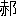

一國の歴史を闡明するには、その一國の記録だけでは不足を免れぬ。是非その國と關係深き他國の記録をも、比較參考する必要がある。支那歴史の研究者としては、支那本國の史料の外に、日本、朝鮮、安南等の記録を參考するは勿論、遠く西域諸國の記録をも利用せなければならぬ。兩漢以來、支那の國威が四表に張ると共に、その國情が次第にキリスト教國や、マホメット教國の間に傳はり、又此等遠西の諸國民も極東に觀光して、その見聞を公にした。此等の見聞録の中には支那の風俗世態等に關して、往々本國の記録に見當らぬ貴重な材料を供給するものも尠くない。極東に關係あるギリシア、ラテンの記録は、略 Coed
 s 氏の Textes d'Auteurs Grecs et Latins relatifs
s 氏の Textes d'Auteurs Grecs et Latins relatifs  L'Extr
L'Extr me-Orient に備はり、マホメット教徒の記録――その地理に關係ある部分を主としてあるが――は、大體 Ferrand 氏の Relations de Voyages et Textes g
me-Orient に備はり、マホメット教徒の記録――その地理に關係ある部分を主としてあるが――は、大體 Ferrand 氏の Relations de Voyages et Textes g ographiques Arabes, Persans et Turks relatifs a L'Extrme-Orient に纏められてある。
ographiques Arabes, Persans et Turks relatifs a L'Extrme-Orient に纏められてある。ギリシア、ラテンの記録は、しばらく措き、マホメット教徒のそれは中々價値が多い。數あるマホメット教徒の記録の中で、その内容の豐かなる點より觀ても、將た又その年代の古き點より觀ても、所謂『印度支那物語』を第一に推さねばならぬ。この物語は前後の二篇に分かれ、前篇は Solayman の記録で、後篇は Ab
 Zayd のそれである。
Zayd のそれである。Solayman は東洋貿易商で、親しく支那に出掛けてその風俗人情を視察した。彼の記録は彼自身に執筆したものでなく、多分彼の見聞を材料として、他の無名の作者が筆録したものと想はれるが、兔に角ヘヂラ暦二三七年即ち西暦八五一年に出來たことは疑を容れぬ。Ab
Zayd は S r
r f の産で、彼自身支那の地を踏まぬけれど、當時 Srf はペルシア灣頭第一の貿易港として、東洋貿易に從事する商賈の出入頻繁であつたから、彼は此等の商賈に就いて傳聞せる所を筆録したもので、ヘヂラ暦三〇三年、即ち西暦九一六年頃の作と認められて居る。要するに『印度支那物語』は、大體に於て西暦九世紀、即ち唐の後半期に於ける、支那人の風俗習慣を知るべき、尤も有益なる尤も面白き材料である。
f の産で、彼自身支那の地を踏まぬけれど、當時 Srf はペルシア灣頭第一の貿易港として、東洋貿易に從事する商賈の出入頻繁であつたから、彼は此等の商賈に就いて傳聞せる所を筆録したもので、ヘヂラ暦三〇三年、即ち西暦九一六年頃の作と認められて居る。要するに『印度支那物語』は、大體に於て西暦九世紀、即ち唐の後半期に於ける、支那人の風俗習慣を知るべき、尤も有益なる尤も面白き材料である。『印度支那物語』のアラブ語原本は、今日パリの國民文庫に現存して居る。この原本の來歴は、委細は Reinaud の著書（Relation des Voyages etc. Tome I, pp. iii-vi）に載せてあるから、態
 ここに紹介する必要がない。この物語は今日まで尠くとも左の如く三度歐洲語に譯出された。
ここに紹介する必要がない。この物語は今日まで尠くとも左の如く三度歐洲語に譯出された。（一） 西暦一七一八年に、フランスの Renaudot が初めて之を佛語に飜譯した。その表題を Anciennes Relations de l'Inde et de la Chine de deux Voyageurs Mahometans qui y all
rent dans le IXime［＃「ie`me」は上付き小文字］ sicle といふ。彼は同時にその本文に對して若干の註解を加へた。Renaudot の佛譯は間もなく一七三三年に英譯せられ、その英譯は更に明治四十三年（西暦一九一〇）に我が東京で飜刻された。東京版の英譯は間々誤植がある。吾が輩は Renaudot 佛譯を有せぬ。また一七三三年版の英譯も左右に備付けてない。故に已むをえず東京版の英譯を使用して居る。
その後本論文のほぼ脱稿する頃に、岩崎家の東洋文庫の好意により Renaudot の佛譯及びその一七三三年版の英譯を借覽することが出來た。併し東京版の英譯の方が、我が學界に普及して居るであらうといふ斟酌もあり、旁本論文中に引用せる Renaudot 譯は、すべて東京版の英譯の頁數を指示することにした。尚ほ東洋文庫から以上の外、三四の著者、雜誌、論文の融通を受け、尠からざる裨益を得た。茲に附記して感謝の意を表する。
（二） 西暦一八四五年に、フランスの有名なるアラブ學者の Reinaud が、アラブ語の原本に添へて、新にその佛譯を公にした。Relation des Voyages faits par les Arabes et les Persans dans l'Inde et 本論文中に引用せる Renaudot 譯は、すべて東京版の英譯の頁數を指示することにした。尚ほ東洋文庫から以上の外、三四の著者、雜誌、論文の融通を受け、尠からざる裨益を得た。茲に附記して感謝の意を表する。 la Chine dans le IXe sicle de l're chrtienne が、この新佛譯の表題である。Reinaud はこの物語の序論として、中世に於けるアラブ人の東洋貿易界に於ける活躍の歴史を附し、又その本文に對して尠からざる註解を施した。（三） 一昨年（西暦一九二二）の末に、同じくフランスの Ferrand 氏が、『東洋古典叢書』（Les Classiques de l'Orient）の第七卷として、新にこの物語の佛譯を公にした。表紙には單に Voyage du Marchand Arabe Solayman en Inde et en Chine r
dig en 851 と題してあるが、その内容は Renaudot や Reinaud のそれと同樣で、前篇は Solayman 後篇は Ab Zayd の記録を收めてある。『印度支那物語』はしかく早くしかく廣く、學界に紹介されたに拘らず、その内容は未だ十分に研究されて居らぬと思ふ。尠くともこの物語中に紹介されてある、支那人の風俗、習慣等に關しては、從來何等權威ある研究が發表されて居らぬ。Renaudot や Reinaud の古き註解がこの點に就いて不十分なることは、特に言明する迄もない。
吾が輩はこの缺陷を遺憾に思ひ、最近四五年來、アラビアと支那との交通を研究すると共に、この物語中に見えて居る支那人の風俗、習慣の研究にも手を着けた。研究の方針として吾が輩は、
（１） この物語と時代を同じくする、唐時代の事蹟に關する支那人の記録に對照して、この物語の記事の確實なることを證明すること。
（２） 不幸にして唐時代に關する支那人の記録に、直接の證據見當らぬ場合には、唐以前の、若くば唐以後の事蹟で、この物語の記事と相發明するに足るものを、支那人の記録中から探求し、これより推して、アラブ人の所傳の信憑すべき程度を明瞭にすること。
（３） 『印度支那物語』の記事にも間々誤謬がある。この誤傳を支那人の記録に據つて證明すること。
（４） アラブ人の所傳と發明すべき、若くば關係ありと思はるる記事が、諸外國人の記録中に見當る場合は、成るべく之を蒐集して參考に供すること。
以上の四點、殊に最初の三點に重きを置いた。
吾が輩は『印度支那物語』に據つて、唐代の支那人の風俗、習慣を研究する序に、出來得べくんば、更に溯つてその風習の起源、又は沿革をも探討したいと心掛けて居る。之が爲に問題によつては、先秦時代より現時に至るまで、上下三千餘年に亙つて、支那文獻を渉獵するは勿論、時には廣く諸外國人の記録をも參考せなければならぬ場合も尠くない。かかる事情の下に、注意に價する程の結果を收めることは、豫期以上の困難を感じたが、併し今日ではこの未開の學田から、多少の收獲を得たかと思ふ。故に不十分を自覺しつつ、その收獲の一部を發表することにした。
支那人間に於ける食人肉の風習は、獨立した一論文として茲に掲載したが、實は上述の如き研究の一端に過ぎぬ。從つて發表の形式も、普通の場合と異にして、『印度支那物語』の記事を論文の冒頭に掲載することにした。爾後若し引續きこの物語に關する研究の結果を發表する場合には、之と同樣の形式を採りたいと思ふ。『印度支那物語』の記事に就いては、Renaudot, Reinaud, Ferrand 三氏の譯文を參考したが、大體に於て學界に廣く用ひられて居る Reinaud 譯に據ることにした。但し彼此の譯文に、注意に價する程の相違がある場合には、特にその旨を附記する。
（
 ） 支那では時々地方の都督（gouverneur）が、その最高の王（即ち皇帝）に對して盡すべき服從を缺くことがある。かかる場合には、彼（その都督）は首を刎られ、食べられて仕舞ふ。支那人は刀劍で殺害された（即ち病死にあらざる）、すべての人の肉を食用する（Reinaud; Tome I, pp. 52-53. Ferrand; p. 67）。
） 支那では時々地方の都督（gouverneur）が、その最高の王（即ち皇帝）に對して盡すべき服從を缺くことがある。かかる場合には、彼（その都督）は首を刎られ、食べられて仕舞ふ。支那人は刀劍で殺害された（即ち病死にあらざる）、すべての人の肉を食用する（Reinaud; Tome I, pp. 52-53. Ferrand; p. 67）。Renaudot の譯は、單に、
支那皇帝の領土内にある都督が罪を犯す時は、彼は死に處せられ、食べられて仕舞ふ。概していへば、支那人は死に處せられた、すべての（罪）人を食用する（p. 25）。
となつて居る。（
 ） 支那帝國はこれ（黄巣の亂）以來、かつてアレキサンダーがダリウスを殺させ、ペルシアの土地をその（部下）將軍達（gnreux）に分つた時に、ペルシアが陷つたと同樣の状態となつた。支那の各地方の（割據せる）都督達は、一層その勢力を増進せんが爲に、君主（souverain 即ち皇帝）の許可も命令もなしに、各自（勝手）に同盟を結んだ。彼等の一人が（より劣勢なる）他（の都督）を討ち滅ぼすに從ひ、彼は後者の所領を併せ、その土地をすべて荒し、その住民を食ひ盡くした。事實支那人の法律は、人肉を食ふことを認可し、人肉が諸市場（marchs）で、公然と販賣されて居る（Renaudot; pp. 34-35. Reinaud; Tome I, pp. 67-68.Ferrand; p. 78）。
） 支那帝國はこれ（黄巣の亂）以來、かつてアレキサンダーがダリウスを殺させ、ペルシアの土地をその（部下）將軍達（gnreux）に分つた時に、ペルシアが陷つたと同樣の状態となつた。支那の各地方の（割據せる）都督達は、一層その勢力を増進せんが爲に、君主（souverain 即ち皇帝）の許可も命令もなしに、各自（勝手）に同盟を結んだ。彼等の一人が（より劣勢なる）他（の都督）を討ち滅ぼすに從ひ、彼は後者の所領を併せ、その土地をすべて荒し、その住民を食ひ盡くした。事實支那人の法律は、人肉を食ふことを認可し、人肉が諸市場（marchs）で、公然と販賣されて居る（Renaudot; pp. 34-35. Reinaud; Tome I, pp. 67-68.Ferrand; p. 78）。Renaudot 譯は、「支那人の法律」（la loi chinoise）の代りに「彼等の宗教の法規」（the laws of their religion）となつて居る。その他は大同小異に過ぎぬ。
Ferrand 譯はこの文章の前半に於て多少の相違があつて、
支那はキスラー（Kisr）の時、アレキサンダーがダリウス大王を殺さしめて、ペルシアをその將軍達の間に分つた時に、ペルシアが陷つたと同樣の状態となつた。支那の（各）地方の行政權を簒つた叛徒達（rebelles）（即ち獨立せる地方都督達）は、國王の許可も命令もなしに、（勝手に）彼等の目的を貫徹すべく、相互に助け合つた。彼等の一人がより強大となつて、より劣勢の者を打ち倒すと、征服者（Vainqueur）はその國を奪ひ、すべてを荒し、その住民のすべてを食ひ盡くした。
となつて居る。以下の文句には殆ど相違がない。）の時、アレキサンダーがダリウス大王を殺さしめて、ペルシアをその將軍達の間に分つた時に、ペルシアが陷つたと同樣の状態となつた。支那の（各）地方の行政權を簒つた叛徒達（rebelles）（即ち獨立せる地方都督達）は、國王の許可も命令もなしに、（勝手に）彼等の目的を貫徹すべく、相互に助け合つた。彼等の一人がより強大となつて、より劣勢の者を打ち倒すと、征服者（Vainqueur）はその國を奪ひ、すべてを荒し、その住民のすべてを食ひ盡くした。（
 ） 支那では既婚の男子が既婚の女子と姦通する時は、（彼等は）死刑に處せられる。泥棒（voleurs）及び人殺（を行うた人）達（meurtriers）も、之と同樣である。彼等（死刑犯罪者）を殺す方法を茲に示す。……罪人を望み通りの状態に置くと、特にその用途に定められて居る笞を以て、罪人の身體の中で、致命を與へ得べき部分を毆打する。毆打の數は一定して居つて、それを超過することは許されない。かくてその罪人は蟲の息を餘すばかりであるから、彼を食べるに違ひない人々（の手）に引渡して仕舞ふ（Renaudot; pp. 35-36. Reinaud; Tome I, pp. 69-70. Ferrand; pp. 79-80）。
） 支那では既婚の男子が既婚の女子と姦通する時は、（彼等は）死刑に處せられる。泥棒（voleurs）及び人殺（を行うた人）達（meurtriers）も、之と同樣である。彼等（死刑犯罪者）を殺す方法を茲に示す。……罪人を望み通りの状態に置くと、特にその用途に定められて居る笞を以て、罪人の身體の中で、致命を與へ得べき部分を毆打する。毆打の數は一定して居つて、それを超過することは許されない。かくてその罪人は蟲の息を餘すばかりであるから、彼を食べるに違ひない人々（の手）に引渡して仕舞ふ（Renaudot; pp. 35-36. Reinaud; Tome I, pp. 69-70. Ferrand; pp. 79-80）。Ferrand 譯の前半は、
以前身持の良かつた二人の男女が、姦通を行ふと、（彼等は）死刑に處せられる。泥棒及び刺客達（assassins）も同一の罰を受ける。（此等の）死刑犯罪者は次の如き方法で、刑を執行される。
となつて居る。以上が『印度支那物語』中に見えて居る、支那人の Cannibalism に關する記事のすべてである。この物語を佛譯したフランスの Reinaud は、この記事に疑惑を挾み、當時支那は紛亂を極めて、殆ど無政府ともいふべき時代であつたから、或は一時的現象として、かかる蠻風が存在したかも知れぬが、恐らくはマホメット教徒――Ab
Zayd――訛傳で、事實に非ざるべしと解釋して居る（Relation des Voyages. Tome II, pp. 41-42. Note 139）。併しこは Reinaud が、支那に古代から食人肉の風習が存在し、殊にこの物語の時代、即ち唐末に於て、この蠻風が尤も廣く尤も盛に流行した事實を知らざる故で、Solayman や Ab Zayd の所傳には、何等誤謬がないのである。支那人は世界に誇負すべき悠遠なる文化を有せるに拘らず、彼等は古代から現時に至るまで、上下三千餘年に亙つて、繼續的に Cannibalism の蠻習をもつて居る。恐らく世界の中で支那人程、豐富な Cannibalism の史料を傳へて居る國民は他にあるまい。古代から支那人が食人肉の風習を有したことは、經史に歴然たる確證が存在して、毫も疑惑の餘地がない。『韓非子』の難言篇に據ると、殷の紂王は自分の不行跡を諫めた人々を罪し、翼侯を炙とし、鬼侯を
 とし、梅伯を醢にしたといふ。炙は人肉を炙ること、は人肉を乾すこと、醢は人肉を
とし、梅伯を醢にしたといふ。炙は人肉を炙ること、は人肉を乾すこと、醢は人肉を
文王之長子曰二伯邑考一。質二於殷一。爲二紂御一。紂烹爲レ羹賜二文王一曰。聖人當レ不レ食二其子羹一。文王食レ之。紂曰誰謂二西伯聖者一。食二其子羮一尚不レ知也。
と記してある。『帝王世紀』や『韓非子』は、殷末を距ること遠い記録で、それらの記事は、その儘に信憑出來ぬとしても、春秋戰國時代に降ると、支那人間に食人肉の風習の行はれたことは、その當時の記録に明記されて居つて疑ふことが出來ぬ。第一春秋の霸者を代表する齊桓晉文、何れも人肉を食用した。齊の桓公が魯國に對して、その仇敵たる管仲の引渡しを要求した時の口上を、『左傳』の莊公九年の條に、「管仲讎也。請受而甘心焉」と記してある。『史記』の齊世家に同一事を、「請得而醢レ之」と記して居る。怨ある人若くは罪ある人の肉を醢にすることは、春秋戰國時代を通じて、支那では決して稀有でなかつた。例へば宋人が宋の閔公を弑した南宮萬や猛護を醢にしたことが、『左傳』莊公十二年の條に見えて居る。孔門の子路が衞國の内亂の際に、その反對黨の爲に殺されて肉を醢にせられ（『禮記註疏』卷六、檀弓上）、又齊の
 王の軍が燕に侵入した時、燕の奸臣子之を醢にしたといふ（『史記集解』燕世家の註に引く所の『汲冢周書』）。人肉食用の風習の存在を承認せずには、人肉を醢にするといふ記事を了解することが六ヶ敷い。
王の軍が燕に侵入した時、燕の奸臣子之を醢にしたといふ（『史記集解』燕世家の註に引く所の『汲冢周書』）。人肉食用の風習の存在を承認せずには、人肉を醢にするといふ記事を了解することが六ヶ敷い。『韓非子』に、
桓公好レ味。易牙蒸二其首子一而進レ之（二柄篇）。
といひ、又、
易牙爲レ君主レ味。君之所レ未二嘗食一。唯人肉耳。易牙蒸二其首子一而進レ之。君所レ知也（十過篇）。
といふに據ると、桓公はその嬖臣易牙の調理した、子供の肉を食膳に上せて、舌鼓を打つたものと認めねばならぬ。晉の文公は天下を周游した際、齊に往き桓公の女を娶つて、茲に一生を託せんとした。彼の舅にして從臣たる狐偃は之を憂ひ、彼に酒を勸め、その沈醉中に齊を引き拂つた。酒覺めて後ち、此の處置に不滿を懷いた文公は狐偃を罵つて、「吾食二舅氏之肉一其知レ厭乎」（『國語』晉語四）といひ、之れと對して狐偃は、「偃之肉腥
 。將焉用レ之」（同上）と申して居る。この問答の裡にも、髣髴として當時食人肉の風習の存在せしことを肯定せしむるではないか。しかのみならず文公はその周游中、食盡きた時に、從臣の一人なる介子推の股肉を食して飢を凌いだことが、『莊子』の盜跖篇に、
。將焉用レ之」（同上）と申して居る。この問答の裡にも、髣髴として當時食人肉の風習の存在せしことを肯定せしむるではないか。しかのみならず文公はその周游中、食盡きた時に、從臣の一人なる介子推の股肉を食して飢を凌いだことが、『莊子』の盜跖篇に、
介子推至忠也。自割二其股一。以食二文公一。
と記してある。晉の文公の子襄公の時、晉が秦と兵を交へた。秦軍大敗してその大將の百里奚孟明視等が捕虜となつた。秦の方では襄公にこの孟明視等の引渡しを願つて、自分の手で嚴重な處分を加へたい希望を申出た。『左傳』の僖公三十三年の條に、その事實を「寡君若得而食レ之不レ厭」と記してある。秦の君（穆公）が、孟明視等の肉を食うても、飽き足らぬ程怒つて居るといふ意味である。又楚の莊王の時、楚が晉に會戰することの可否に就いて、楚の令尹たる孫叔敖と、莊王の嬖臣の伍參と、意見を異にして爭論せし有樣を、『左傳』の宣公十二年の條に、
嬖人伍參欲レ戰。令尹孫叔敖弗レ欲。曰。……戰而不レ捷。參之肉其足レ食乎。參曰。……不レ捷。參之肉將レ在二晉軍一可レ得レ食乎。
と記載してある。『戰國策』の中山策の條を見ると、中山の君がその臣下に外國に内通する噂ある者に對して、吾食二其肉一。不二以分一レ人と申して居る。此の如き不忠なる者には殺戮を加へ、その肉は自分一人にて飽食するといふことで、惡むこと甚しき意味を述べたものであらう。齊人魯仲連が邯鄲城内で、趙をして秦を尊んで帝を稱せしむべく運動中の、梁の將軍新垣衍に面會して、その運動の不可なる所以を説き、「吾將レ使三秦王。烹二醢梁王一」と申して居る（『史記』卷八十三、魯仲連傳）。秦の帝となり天下を統一した曉には、趙や梁（魏）の國王の生殺の權は、秦王の掌握に歸すといふ意味である。此等の記事を以て、當時の支那人が人肉を食用した、直接の證據に供することは、或は多少早計かも知れぬ。併し此の如き食レ肉とか醢レ肉とかいふ言顯法の慣用さるることは、その根柢に、人肉食用の事實の存在を前提とせねば、理會し難いと思ふ。かかる文句の疊見することは、やがて古代の支那人間に、Cannibalism の行はれた、間接の證據に供して差支あるまい。東周の定王の十三年（西暦前五九四）に、楚の莊王が宋を圍んだ。宋軍は糧食空乏して、遂に和を願ひ出でたが、『左傳』にその事を記して、
敝邑易レ子而食。析レ骸而爨（宣公十五年）。
といひ、『列子』の説符篇に同一事を記して、
楚攻レ宋圍二其城一。民易レ子而食レ之。析レ骸而炊レ之。
といふ。『戰國策』の齊策に、齊の田單が聊城に燕軍を攻圍した時の有様を記して、食レ人炊レ骨とある。秦漢以後の記録にも、よく此等と同一、若くは類似の文句が見當る。此等の文句は何れも城守困乏の甚しき状況を形容したものとも解し得るけれども、後世飢饉の際に、支那人は彼此その子を易へて食に充てた實例に照らすと、又籠城久しきに亙る場合、支那人はよく人肉を糧食に供した實例に照らすと、此等の文句は、單なる形容以上に、幾分の事實を傳へたものと斷ぜねばなるまい。『莊子』の盜跖篇に據ると、孔子が大泥棒の盜跖を説諭に出掛けた時、盜跖は人肉を肴に晝食を取りながら、孔子を恫喝して、
疾走歸。不レ然。我將下以二子肝一益中晝餔之膳上。
というた。『莊子』には寓言が多いから、孔子と盜跖の問答などは、勿論その儘に事實と受取ることが出來ぬけれども、盜跖篇の作者が、此の如き文句を使用して居る點が、Cannibalism の研究者にとつて、一顧の價あると思ふ。荀子が陵墓發掘のことを論じて、
雖二此 而埋一レ之。猶且必※［＃「てへん＋日」、U+6287、163-7］也。安得二葬埋一也。彼乃將下食二其肉一。而中其骨上也（『荀子』正論篇）。
而埋一レ之。猶且必※［＃「てへん＋日」、U+6287、163-7］也。安得二葬埋一也。彼乃將下食二其肉一。而中其骨上也（『荀子』正論篇）。
といへるは、假定の推理で、當面の事實を述べたものではないが、併し彼が澆季の時勢を憤慨して、「故脯二巨人一而炙二嬰兒一矣」（正論篇）と述べたる所は、彼が見聞した事實と認むべきであらう。『戰國策』の中山策に、魏の樂羊が中山を圍んだ時、中山の人はその城中に居つた樂羊の子を烹て羮を作り、之を樂羊に贈つたことを記して、而埋一レ之。猶且必※［＃「てへん＋日」、U+6287、163-7］也。安得二葬埋一也。彼乃將下食二其肉一。而中其骨上也（『荀子』正論篇）。
樂羊爲二魏將一攻二中山一。其子時在二中山一。中山君烹レ之作レ羮致二於樂羊一。樂羊食レ之。
といひ、ほぼ同一の記事が『韓非子』（説林上篇）にも見えて居るのは、明かに人肉食用の事實である。若し仔細に先秦の經傳諸子を點檢したならば、更に幾多の材料を提供し得るであらうが、上來の憑據だけでも、十分に支那古代に於ける Cannibalism の存在を證明するに足ると思ふ。
秦漢以後も歴代の正史記録に、Cannibalism の事實が疊出して居つて、支那人の人肉を食用するのは、決して一時の偶發でなく、寧ろその傳統的慣習なることを發見することが出來る。『史記』の項羽本紀を見ると、漢楚交戰時代に、楚の項羽は漢の高祖の父太公を擒として、之を俎上に置いて高祖を威嚇した。高祖は之に對して「幸分二我一羮一」と對へて居る。高祖は又彭越を誅戮し、その肉を醢にして、
 く諸侯に賜うた（『史記』卷九十一、黥布傳）。この應對、この處分は、何れも食人肉の風習と關係あるものであるまいか。
く諸侯に賜うた（『史記』卷九十一、黥布傳）。この應對、この處分は、何れも食人肉の風習と關係あるものであるまいか。支那には古來飢饉が多い。飢饉の場合には一般に人肉食用が行はれる。試に『前漢書』『後漢書』に據つて、兩漢時代に於ける實例を示すと下の如くである。
年代 「記事」（出典）
｛高祖二年（西暦前二〇五）？｝ 「漢興接二秦之敝一。諸侯竝起。民失二作業一。而大飢饉。凡米石五千。人相食。死者過半。高祖乃令丁民得丙賣レ子。就乙食蜀漢甲。」（『前漢書』食貨志）
高祖二年（前二〇五）六月 「｛關中大飢。米斛萬錢。人相食。令下民就中食蜀漢上。｝」（『前漢書』高祖本紀）
武帝建元三年（前一三八）春 「河水溢二于平原一。大飢。人相食。」（『前漢書』武帝本紀）
武帝｛建元六年（前一三五）？｝ 「河南貧人傷二水旱一。萬餘家。或父子相食。」（｛『資治通鑑』建元六年條｝）
武帝｛鼎元三年（前一一四）四月｝ 「關東郡國十餘飢。人相食。」（『前漢書』武帝本紀）
元帝初元元年（前四八）九月 「關東郡國十一。大水。飢。或人相食。轉二旁郡錢穀一。以相救。」（『前漢書』元帝本紀）
元帝初元二年（前四七）六月 「齊地飢。穀石三百（？）餘。民多餓死。琅邪郡人相食。」（『前漢書』食貨志）
成帝永始二年（前一五） 「梁國平原郡。比年傷二水災一。人相食。」（同右）
王莽天鳳元年（一四） 「縁邊大饑。人相食。」（『前漢書』王莽傳）
王莽地皇三年（二二）二月 「關東人相食。」（同右）
｛王莽時｝ 「｛北邊及青徐地。人相食。陽以東米石二千。｝」（『前漢書』食貨志）
｛光武帝建武元年（二五）？｝ 「民饑餓相食。死者數十萬。長安爲レ虚。城中無二人行一。」（『前漢書』王莽傳）
光武帝建武二年（二六） 「三輔大饑。人相食。城郭皆空。白骨蔽レ野。」（｛『資治通鑑』建武二年條｝）
安帝永初二年（一〇八）正月 「時州郡大饑。米石二千。人相食。老弱相二棄道路一。」（『後漢書』安帝本紀註）
同三年（一〇九）三月 「京師大饑。民相食。……詔曰。朕……至レ令下百姓饑荒。更相 食上。永懷二悼歎一。」（『後漢書』安帝本紀）
食上。永懷二悼歎一。」（『後漢書』安帝本紀）
食上。永懷二悼歎一。」（『後漢書』安帝本紀）同三年（一〇九）十二月 「并涼二州大饑。人相食。」（同右）
桓帝元嘉元年（一五一）四月 「任城梁國饑。民相食。」（『後漢書』桓帝本紀）
桓帝永壽元年（一五五）二月 「司隷冀州饑。人相食。」（同右）
靈帝建寧三年（一七〇）正月 「河内人婦食レ夫。河南人夫食レ婦。」（『後漢書』靈帝本紀）
獻帝興平元年（一九四） 「是歳穀一斛五十萬。豆麥一斛二十萬。人相食啖。白骨委積。」（『後漢書』獻帝本紀）
獻帝建安二年（一九七） 「是歳饑。江淮間民相食。」（同右）
就中王莽の末年天下騷擾の際に、Cannibalism が尤も廣い範圍に行はれた。『後漢書』卷六十九あたりの列傳を一瞥しても、容易に當時の光景を想像することが出來る。三國兩晉以來隋唐時代にかけても、支那人の Cannibalism の證據は澤山見える。一々の歴擧は餘りに煩雜なるを恐れて見合せ、その泰甚なる實例四五だけを紹介したい。東晉の末に孫恩といふ海賊があつて、東南沿海地方を暴掠し
 つた。彼は各地方の縣令を擒にすると、その肉を醢にして縣令の妻子に食はしめ、躊躇する者は支解した――「醢二諸縣令一。以食二其妻子一。不二肯食一者。輙支二解之一。」（『資治通鑑』晉紀三十、隆安三年の條）――といふ。慘酷至極の話ではないか。
つた。彼は各地方の縣令を擒にすると、その肉を醢にして縣令の妻子に食はしめ、躊躇する者は支解した――「醢二諸縣令一。以食二其妻子一。不二肯食一者。輙支二解之一。」（『資治通鑑』晉紀三十、隆安三年の條）――といふ。慘酷至極の話ではないか。君に反き上に逆ふ不忠の輩は、之を殺戮してその肉を食ひ、若くは官民をしてその肉を食はしむることは、支那の古代から實行されて居つて、決して珍らしい事實でない。隋の煬帝が叛臣の斛斯政を捕へて之を誅戮し、その肉を烹て、百官をして之を食せしめた。百官の或る者は、成るべく多量にその肉を飽食して、煬帝の歡心を買つたといふ（『資治通鑑』隋紀六、大業十年の條）。やや事情を異にするが、宋の文帝を弑して、一時帝位を簒つた劉劭の羽翼となつた張超之は、やがて失敗すると、將校士卒の爲に殺害せられ、且つ彼等の餌食となつた。
｛張超之｝……爲二亂兵所一レ殺。割レ腸胯レ心。臠二剖其肉一。諸將生二之一。焚二其頭骨一（『宋書』卷九十九、二凶傳）。
これが當時の記載である。之一。焚二其頭骨一（『宋書』卷九十九、二凶傳）。『資治通鑑』貞觀十七年（西暦六四三）の條に、太宗がその猛將丘行恭が逆臣の心肝を食したことを責めて、
※［＃「樗のつくり＋おおざと」、U+9120、166-15］尉游文芝。告二代州都督劉蘭成謀反一。……蘭成坐二腰斬一。右武侯將軍丘行恭。探二蘭成心肝一食レ之。上聞而讓レ之曰。蘭成謀反。國有二常刑一。何至レ如レ此。若以爲二忠孝一。則太子諸王。先食レ之矣。豈至レ卿邪。行恭慙而拜謝。
とある。太宗の見識は流石であるが、唐一代を見渡すと、依然としてこの野蠻な私刑（？）が、實行され又は默許された。玄宗時代の宦官揚思 が、賊臣に内通した官吏を處分した時の状況が、『舊唐書』に「探二取其心一。截二去手足一。割レ肉而啖レ之」（卷百八十四、宦官傳）と記されてある。徳宗時代の大將李懷光は、その養子の石演芬が、己に反對するのを怒つて、その左右に命じて之を臠食せしめんとした（『資治通鑑』唐紀四十六、興元元年の條、『舊唐書』卷百八十七、下、忠義傳）。されば Solayman の傳ふる所（）は悉く事實と認めねばならぬ。隋唐時代の支那人は反逆者を殺して、その肉を食したことも事實であれば、彼等は病死の者を除き、杖殺された又は斬殺された者の肉を、平氣で食用したことも事實である。
が、賊臣に内通した官吏を處分した時の状況が、『舊唐書』に「探二取其心一。截二去手足一。割レ肉而啖レ之」（卷百八十四、宦官傳）と記されてある。徳宗時代の大將李懷光は、その養子の石演芬が、己に反對するのを怒つて、その左右に命じて之を臠食せしめんとした（『資治通鑑』唐紀四十六、興元元年の條、『舊唐書』卷百八十七、下、忠義傳）。されば Solayman の傳ふる所（）は悉く事實と認めねばならぬ。隋唐時代の支那人は反逆者を殺して、その肉を食したことも事實であれば、彼等は病死の者を除き、杖殺された又は斬殺された者の肉を、平氣で食用したことも事實である。支那人の Cannibalism の實例を擧ぐる場合に、決して隋末唐初に出た朱粲のことを逸してはならぬ。彼は劇賊の首領で、二十萬の部下を率ゐて中原を横行し、到る所で居人を掠奪殺戮して粮食に充てた。『舊唐書』にこの事實を次の如く記述してある。
｛朱粲｝軍中竭。無レ所二虜掠一。乃取二嬰兒一蒸而レ之。因令二軍士一曰。食之美者。寧過二於人肉一乎。但令二他國有一レ人。我何所レ慮。即勒二所部一。有二略得婦人小兒一。皆烹レ之分給二軍士一。乃税二諸城堡一。取二小弱男女一。以益二兵粮一（卷五十六、朱粲傳）。
有名なる顏之推の子の顏愍楚は、朱粲の軍に囚はれてその幕僚となつたが、後に軍中食に乏しくなると、彼の一家を擧げて朱粲にレ之。因令二軍士一曰。食之美者。寧過二於人肉一乎。但令二他國有一レ人。我何所レ慮。即勒二所部一。有二略得婦人小兒一。皆烹レ之分給二軍士一。乃税二諸城堡一。取二小弱男女一。以益二兵粮一（卷五十六、朱粲傳）。ひ盡されたといふ。彼は人から人肉の滋味を聞かれた時、「若二嗜レ酒之人一。正似二糟藏猪肉一」と答へて居る。誠に驚くべき食人鬼ではないか。古來支那で革命の起る際には、國内の秩序が立たず、又擾亂の爲に農耕が廢して、穀物が缺乏するから、自然人肉の食用が盛に行はるるのが一の慣例となつて居る。既に東漢の王充が、「敗亂之時。人相啖食」（『論衡』卷二十、論死篇）と公言した程である。就中唐の末期に、この蠻風が前代の慣例以上に甚しく流行した。この事實が當時支那に往來した、マホメット教徒の見聞に觸るるのは、當然と申さねばならぬ。今試に『資治通鑑』に據つて、Ab
Zayd の時代に當該する、四十年間に起つた食人肉に關する記事を左に開列する。勿論こは『資治通鑑』一書に見えた記事のみで、他の公私の記録を廣く渉獵したものでないから、必しも當時に於ける人肉食用の事實を、悉く網羅したものでないことを、特に附記して置く。年代 「記事」
（１）唐僖宗中和二年（八八二）四月 「長安城中。斗米直三十緡。賊賣二（買？）人於官軍一以爲レ糧。官軍或執二山寨之民一（良民避レ亂入レ山築レ柵自保者）鬻レ之。人直數百緡。以二肥瘠一論レ價。」
（２）僖宗中和三年（八八三）六月 「時民間無二積聚一。｛黄巣｝賊掠レ人爲レ糧。生投二於碓磑一。併レ骨食レ之。號二給糧之處一。曰二舂磨寨一。」
（３）僖宗光啓三年（八八七）六月 「｛揚州｝城中乏レ食。樵採路絶。宣州軍始食レ人。」
（４）同年九月 「高駢在二｛揚州城内｝道院一。秦彦供給甚薄。左右無レ食。至下然二木像一。煮二束帶一食レ之。有中相啗者上。」
（５）同年十月 「楊行密圍二廣陵（揚州）一。且二半年一。城中無レ食。米斗直錢五十緡。草根木實皆盡。以二菫泥一爲レ食レ之。餓死者大半。宣｛州｝軍掠レ人。詣レ肆賣レ之。驅縛屠割。如二羊豕一。訖無二一聲一。積骸流血。滿二於坊市一。」
（６）僖宗文徳元年（八八八）二月 「｛李｝罕之。所部。不二耕稼一。專以二剽掠一爲レ貨。啗レ人爲レ糧。」
（７）昭宗龍紀元年（八八九）六月 「楊行密圍二宣州一。城中食盡。人相啗。」
（８）昭宗大順二年（八九一）四月 「｛王｝建陰令下東川將唐友通等。擒二｛韋｝昭度親吏駱保於行府門一。臠中食之上。」
（９））同年七月 「｛孫儒｝悉焚二揚州廬舍一。盡驅二丁壯及婦女一度レ江。殺二老弱一以充レ食。」
（10）昭宗景福二年（八九三）二月 「｛李｝克用逆二｛王鎔軍｝一。戰二於叱日嶺下一。大破レ之。斬首萬餘級。河東軍無レ食。脯二其尸一而啗レ之。」
（11））昭宗乾寧元年（八九四）五月 「王建攻二彭州一。城中人相食。」
（12）昭宗天復二年（九〇二）十一月 「是冬大雪。｛鳳翔｝城中食盡。凍餒死者。不レ可レ勝レ計。或臥未レ死。已爲二人所一レ※［＃「咼−口」、U+518E、169-16］。市中賣二人肉一。斤直錢百。犬肉直五百。｛李｝茂貞儲※［＃「にんべん＋待」、U+506B、169-17］亦竭。以二犬 一供二御膳一。上鬻二御衣及小皇子衣於市一。以充レ用。」
一供二御膳一。上鬻二御衣及小皇子衣於市一。以充レ用。」
一供二御膳一。上鬻二御衣及小皇子衣於市一。以充レ用。」（13）昭宜帝天祐三年（九〇六）九月 「 軍築レ壘圍二滄州一。……城中食盡。丸レ土而食。或互相掠啖。」
軍築レ壘圍二滄州一。……城中食盡。丸レ土而食。或互相掠啖。」
軍築レ壘圍二滄州一。……城中食盡。丸レ土而食。或互相掠啖。」（14）後梁太祖開平三年（九〇九）十二月 「劉守光圍二滄州一。……城中食盡。民食二菫泥一。軍士食レ人。……呂 選二男女羸弱者一。飼以二麹麪一而烹レ之。以給二軍食一。謂二之宰殺務一。」
選二男女羸弱者一。飼以二麹麪一而烹レ之。以給二軍食一。謂二之宰殺務一。」
選二男女羸弱者一。飼以二麹麪一而烹レ之。以給二軍食一。謂二之宰殺務一。」（15）太祖乾化元年（九一一）八月 「｛劉｝守光怒二｛孫鶴之諫一レ己｝。伏二諸質上一。令二軍士※［＃「咼−口」、U+518E、170-3］而一レ之。」
一レ之。」（16）末帝貞明二年（九一六）九月 「晉人圍二貝州一踰レ年。……城中食盡。レ人爲レ糧。」
レ人爲レ糧。」（17）末帝龍徳二年（九二二）九月 「鎭州食竭力盡。……｛晉軍入レ城｝執二｛張｝處瑾兄弟家人。及其黨高濛、李、齊儉一。送二行臺一。趙人皆請而食レ之。」
上の（２）に紹介した黄巣の賊徒の狼藉は、『舊唐書』卷二百下の黄巣傳に、今少しく詳細に、
關東仍歳無二耕稼一。人餓倚二牆壁間一。賊俘レ人而食。日殺二數千一。賊有二舂磨砦一。爲二巨碓數百一。生納二人於臼一碎レ之。合レ骨而食。
と記してある。數千幾萬の無辜の良民を、生きながら碓にて舂き、磑にて磨して食用に供するとは、誠に前代未聞の慘事と申さねばならぬ。殊に又賊軍討伐の任に當れる官軍が、却つて良民を執へ、之を金に換へて賊軍の糧食に資するが如きは、支那以外の他國では、到底見當らぬ唐の中世以後揚州は支那第一の大都會であつた。當時揚一といふ諺があつて、富庶繁華を以て天下に冠絶して居つた。所が唐末紛擾の際に、殊に當時の軍界の元勳たる淮西節度使の高駢が失勢して以來、揚州は群雄爭奪の區となり、多年修羅の巷となつた。『舊唐書』にその光景を傳へて、次の如く記してある。
廣陵（揚州）大鎭。富甲二天下一。自二｛畢｝師鐸、秦彦之後一。孫儒｛楊｝行密。繼踵相攻。四五年間。連レ兵不レ息。廬舍焚蕩。民戸喪亡。廣陵之雄富掃レ地矣（卷百八十二、秦彦傳）。
この間揚州の住民は、文字通りに塗炭の苦を受け、魚肉の厄に罹つた。『五代史記』に上の（５）に紹介した同一事實を記して、
是時城中倉庫空虚。飢民相殺而食。其夫婦父子。自相牽。就レ屠賣レ之。屠者※［＃「卦のへん＋りっとう」、U+5232、171-3］剔如二羊豕一（卷六十一上、呉世家）。
と傳へて居る。酸鼻至極の記事ではないか。揚州は唐代の外國貿易港の一で、多數のマホメット教徒が茲に滯在して居つた（大正八年十月の『史學雜誌』に掲げた拙稿「イブン・コルダードベーに見えたる支那の貿易港」六二―六四頁［＃ここに「本全集第三卷所收」と注記］）。黄巣の反亂は廣く且つ詳に、マホメット教徒の間に知られて居つた（Reinaud; Relation des Voyages. Tome I, pp. 63-68. Ma
 oudi; Les Prairies d'Or. Tome II, pp. 302-306）。されば黄巣の行つた虐殺、揚州に於ける慘事も、亦彼等の耳目に觸れた筈である。Ab Zayd の傳へる（）の記事は、當時のマホメット教徒の見聞に本づけるもので、大體に於て事實と認めねばならぬ。唐末四方に獨立割據した節度使達が、勝手氣儘に弱肉強食の爭を釀したのも事實であれば、その爭奪の犧牲となつた土地の荒廢し、住民の難澁したのも事實である。上に『資治通鑑』に據つて紹介した記事の中には、籠城久しきに亙つて、味方同志食した事實も多いが、又敵陣を陷れ敵地を略して、その兵民を食した事實も尠くない。（２）の黄巣、（３）の宣州軍、（６）の李罕之、（９）の孫儒、（10）の李克用の場合のごときは、大體に於て後者に屬すべきもので、Ab Zayd の記事の正確なることを保證すべき實例である。敵國を侵略若くば併合する際に、敵の捕虜を食するといふ蠻習は、この以後でも時々支那で實行された。北宋の初期の乾徳元年（西暦九六三）に、宋軍が湖南征伐を行うた際、宋の兵馬都監李處耘の部下は敵の捕虜を食した。『宋史』にこの事實を、
oudi; Les Prairies d'Or. Tome II, pp. 302-306）。されば黄巣の行つた虐殺、揚州に於ける慘事も、亦彼等の耳目に觸れた筈である。Ab Zayd の傳へる（）の記事は、當時のマホメット教徒の見聞に本づけるもので、大體に於て事實と認めねばならぬ。唐末四方に獨立割據した節度使達が、勝手氣儘に弱肉強食の爭を釀したのも事實であれば、その爭奪の犧牲となつた土地の荒廢し、住民の難澁したのも事實である。上に『資治通鑑』に據つて紹介した記事の中には、籠城久しきに亙つて、味方同志食した事實も多いが、又敵陣を陷れ敵地を略して、その兵民を食した事實も尠くない。（２）の黄巣、（３）の宣州軍、（６）の李罕之、（９）の孫儒、（10）の李克用の場合のごときは、大體に於て後者に屬すべきもので、Ab Zayd の記事の正確なることを保證すべき實例である。敵國を侵略若くば併合する際に、敵の捕虜を食するといふ蠻習は、この以後でも時々支那で實行された。北宋の初期の乾徳元年（西暦九六三）に、宋軍が湖南征伐を行うた際、宋の兵馬都監李處耘の部下は敵の捕虜を食した。『宋史』にこの事實を、
｛宋軍｝至二敖山砦一。賊棄レ砦走。俘獲甚衆。｛李｝處耘釋二所レ俘體肥者數十人一。令三左右分二啗之一。黥二其少健者一。令三先入二朗州一。……黥者先入レ城。言三被レ擒者悉爲二大軍所一レ啗。朗人大懼。縱レ火焚レ城而潰（卷二百五十七、李處耘傳）。
と記してある。この李處耘は實に宋の太宗の皇后、即ち明徳皇后の實父に當るから驚く。李處耘と關聯して憶ひ出されるのは、同時代の王繼勳である。彼は宋の太祖の皇后即ち孝明皇后の近親であるが、性疎暴で屡
その使役せる子女を殺し食したといふ。この人に關しては、南宋の趙與時の『賓退録』卷七に下の如く傳へてある。
本朝王繼勳。孝明皇后母弟。太祖時屡以レ罪貶。後以二右監門衞率府副率一。分二司西京一。殘暴愈甚。強市二民間子女一。以備二給使一。小不レ如レ意。即殺而食レ之。以二※［＃「木＋彗」、U+69E5、172-8］一貯二其骨一。棄二之野外一。女僧及鬻レ棺者。出二入其門一不レ絶。太宗即位。會有二訴者一。斬二于洛陽市一。
但 Ab Zayd が支那人の法律は人肉を食することを認可すといへる一節は、多少の説明を要する。既に孟子も「獸相食。且人惡レ之」（梁惠王上）と申して居る位で、支那人とて人肉の相食むのを尋常の出來事として看過する筈がない。現に唐の張巡が忠義の爲とはいへ、人肉を食したことに對してすら、一部の非難があつた（『新唐書』卷百九十二、張巡傳）。支那人の法律が主義として人肉食用を公認する筈がない。されど Ab Zayd の時代、即ち唐末から五代の初期にかけて、支那國内の秩序亂れ綱紀壞ぶれ、所在の市場で人肉の公賣されたことは、疑なき事實である。『五代史記』も『資治通鑑』も、揚州の市場で公然人肉の販賣された事實を明記してある。即ち事實としては、當時の支那官憲は、人肉の食用と販賣に對して、何等の禁制を加へなかつた。此の如くして Ab Zayd 傳ふる所のこの一節も、亦大體に於て事實と認めねばならぬ。唐末五代以後も、支那人の Cannibalism は依然行はれた、この一千年間に於ける正史野乘を遍ねく探つたならば、Cannibalism の例證は恐らくは山にも比し得る程と思ふ。吾が輩はかかる例證を一々探討する餘暇もなく、又かかる例證を一々羅列する必要をも感ぜぬ。ただこの期間に起つた尤も酷烈なる Cannibalism の記事二三を茲に掲げて、全貌窺測の資料に供したい。
北宋末から南宋の初期にかけて、女眞人の入寇により、支那を擧げて紛擾の裡に陷つた。この際例によつて所在に人肉食用が流行した。就中南宋の莊綽の『
 肋編』（『説郛』※［＃「疆のへん」の「土」に代えて「一」、U+38A7、173-7］二十七所收）に記する所、尤も酸鼻を極めて居る。
肋編』（『説郛』※［＃「疆のへん」の「土」に代えて「一」、U+38A7、173-7］二十七所收）に記する所、尤も酸鼻を極めて居る。
自二靖康丙午歳（西暦一一二六）。金狄亂一レ華。六七年間。山東、京西、淮南等路。荊榛千里。米斗至二數十千一。且不レ可レ得。盜賊官兵以至二民居（居民？）一更相食。人肉之價賤二于犬豕一。壯者一枚。不レ過二十五斤一。躯暴以爲レ。登州范温率二忠義之人一。紹興癸丑歳（西暦一一三三）。汎レ海到二錢塘一。有下至二行在（杭州）一猶食者上。老嫂（痩？）男子婦女。更謂二之饒把火一。婦人少艾者。名二之下羹羊一。小兒呼爲二和骨爛一。又通目爲二兩脚羊一。唐止 朱粲一賊。今百二倍于前數一。殺戮、焚溺、飢餓、疾疫、陷墮。其死已衆。又加レ之以二相食一。……不レ意以二老眼一。親見二此時一。嗚呼痛哉。
この兩脚羊とは兩脚を有する羊の意味で、人間を羊同樣に食用するから起つた名稱である。和骨爛とは骨と肉を併せて火食する、下羮羊は『輟耕録』卷九に引けるものは不美羹となつて居る。これは羹の料に供するより起つた名稱で、饒把火とは肉硬くして燃料を多く要するより起つた名稱かと想ふ。。登州范温率二忠義之人一。紹興癸丑歳（西暦一一三三）。汎レ海到二錢塘一。有下至二行在（杭州）一猶食者上。老嫂（痩？）男子婦女。更謂二之饒把火一。婦人少艾者。名二之下羹羊一。小兒呼爲二和骨爛一。又通目爲二兩脚羊一。元朝の末期に出た陶宗儀の『輟耕録』卷九にも、その當時の事實として、『
肋編』に劣らざる、否遙にそれ以上と認むべき悲慘な記事を傳へて居る。
天下兵甲方殷。而淮右之軍。嗜食レ人。以二小兒一爲レ上。婦女次レ之。男子又次レ之。或使レ坐二兩缸間一。外逼以レ火。或於二鐵架上一生炙。或縛二其手足一。先用二沸湯一澆溌。却以二竹帚一刷二去苦皮一。或乘二夾袋中一。入二巨鍋一。活 。或※［＃「卦のへん＋りっとう」、U+5232、174-5］二作事件一（？）而淹レ之。或男子則止斷二其雙腿一。婦女則特
。或※［＃「卦のへん＋りっとう」、U+5232、174-5］二作事件一（？）而淹レ之。或男子則止斷二其雙腿一。婦女則特 二其兩乳一酷毒萬状。不レ可二具言一。
二其兩乳一酷毒萬状。不レ可二具言一。
活人をその儘火炙にするとか、袋に入れ鍋で。或※［＃「卦のへん＋りっとう」、U+5232、174-5］二作事件一（？）而淹レ之。或男子則止斷二其雙腿一。婦女則特二其兩乳一酷毒萬状。不レ可二具言一。るとか、その手足を縛し熱湯をかけて皮膚を爛らし、竹帚にてその皮膚を洗刷する等、千歳の下猶ほ聞く者をして毛髮竦然たらしむるではないか。此の記事の如きは、單に支那人の食人肉の一材料のみでなく、又支那人の殘忍性を證明するべき一材料と思ふ。明の謝肇
 の『文海披沙』卷七に、左の如き記事がある。
の『文海披沙』卷七に、左の如き記事がある。
我太祖高皇帝時。開平王常遇春妻甚妬。上賜二侍女一。王悦二其手一。妻即斷レ之。王憤且惧。入朝而色不レ懌。上詰再三。王始具對。上大笑曰。此小事耳。再賜何妨。且飮レ酒寛レ懷。密令二校尉數人一至二王第一。誅二其妻一支二解之一。各以二一臠一賜二群臣一。題曰二悍婦之肉一。肉至。王尚在レ座。即以賜レ之。王大驚謝歸。怖 累日。此事千古之快。其過二唐太宗一萬萬矣。
累日。此事千古之快。其過二唐太宗一萬萬矣。
唐の太宗は、曾て兵部尚書の任環に二宮女を賜ふたが、任環の妻柳氏は妬※［＃「女＋旱」、U+5A28、174-14］で、二宮女を虐待した。太宗は態累日。此事千古之快。其過二唐太宗一萬萬矣。柳氏を招きて懇諭したが、柳氏は頑として聽入れぬ。一天萬乘の太宗も、已むを得ずして二宮女を別宅に安置させたことが、唐の張の『朝野僉載』に見えて居る。謝肇は明の太祖と比較すべく、この故事を引用したのである。さるにても天子の尊に居る明の太祖が、公然かかる蠻行を敢てするとは驚くべきでないか。更に一代の達識を以て稱せらるる謝肇が、この蠻行を稱揚して千古の快事など放言するに至つては、愈呆るる外ない。明末清初に流賊横行の際に、例によつて、到る處で人肉食用の蠻行が起つた。この事實は、當時の支那人及び外國人の記録に散見して居るが、その代表として、清初の顧山貞の『客
 述』の一節を紹介する。
述』の一節を紹介する。
｛明永明王永暦元年（西暦一六四七）｝四川大飢。民相食。有二夫婦父子互食者一。蓋甲申（西暦一六四四）以來。大亂三年。民皆逃竄。無二人耕種一。而宿糧棄廢又盡。故飢荒至レ此。……嘉定州則斗米三十金。成都、重慶。倶五十金。……成都人多逃入二雅州一。採二野菓一而食。亦多下流二入土司一者上。死亡滿レ路。屍纔倒レ地。即爲二人割去一。雖レ斬レ之不レ可レ止。……成都食レ人尤甚。強者聚二衆數百一。掠レ人而食。若レ屠二羊豕一然。綿州大學士劉宇亮少子。亦爲二強盜所一レ食。……男子肉毎斤七錢。女子肉毎斤八錢。塚中枯骨。皆掘出爲レ屑以食焉。
支那の雜劇、稗史、小説等のうちにも、人肉食用の記事の尠からざることは、有名なフランスの Bazin が夙に注意して居る（Chine Moderne. pp. 460, 461）。此等の記事を、その儘に事實として受取り難くとも、かかる記事の存在その者を、支那人間に Cannibalism の行はれた、一旁證と認めて差支あるまい。吾が輩はこの方面の智識誠に貧弱であるが、その貧弱な智識の中から二三の例を左に紹介する。
元曲中に「趙禮讓肥」がある。王莽の末年に於ける天下騷亂の際に、趙孝、趙禮といふ二人の兄弟が、亂を宜秋山下に避けて、母親に孝養を盡して居つた。所が一日弟の趙禮が、馬武といふ盜賊の頭目の手に捕獲された。馬武は彼自身、
某今在二這宜秋山虎頭寨一。落草 爲レ寇。也 是不レ得レ已而爲レ之。毎二一日一要レ喫二一副人心肝一。今日拿二住一頭牛一。欲レ待レ殺二壞他一。
と告白して居る通り、この趙禮を料理して食に充てんとした。弟の不運を聞き知つた趙孝は、早速馬武の營下に到つて、弟の身代りに立たんことを哀求した。かくて馬武の面前で、趙孝、趙禮の兄弟が、身の肥痩を競ひ死を爭うた。さしも鐵心腸の馬武も、二人の友情に感動して、之を放免した。やがて東漢一統の世となると、馬武は用ひられて天下兵馬大元帥となり、彼の推擧で趙孝趙禮兄弟も、それぞれ出世するといふのが、この劇の筋書である（『元曲選』第二十九册參看）。この趙孝趙禮の墓は、今も直隷省昌平縣の西北の賢莊口にあるといふ（『光緒昌平州志』卷十）。趙孝趙禮の事蹟は『後漢書』に、
及二天下亂一。人相食。（趙）孝弟禮爲二餓賊所一レ得。孝聞レ之即自縛。詣レ賊曰。禮久餓羸痩。不レ如二孝肥飽一。賊大驚竝放レ之。謂曰可下且歸。更持二米糒一來上。孝求不レ能レ得。復往報レ賊。願レ就レ烹。衆異レ之。遂不レ害（卷六十九、趙孝傳）
と見えて居る。「趙禮讓肥」一劇はこの史實に本づくことがわかる。食人肉の風習の行はるる支那では、趙孝趙禮の如く、兄弟若くは父子夫婦の間に、肥を讓つた事例は必しも稀有でない。『後漢書』一書の中からでも、幾多の實例を擧ぐるに難くない。「趙禮讓肥」の作者秦簡夫と、ほぼ時代を同くする李仲義の妻劉氏の如きも、かかる代表の一人として擧ぐることが出來る。
劉氏名翠哥。房山人。至正二十年（西暦一三六〇）縣大饑。平章劉哈剌不花乏レ食。執二｛李｝仲義一欲レ烹レ之。……劉氏……涕泣伏レ地。告二於兵一曰。所レ執者是吾夫也。乞矜二憐之一。貸二其生一。吾家有二醤一甕。米一斗五升一。窖二于地中一。可下掘二取之一以代中吾夫上。兵不レ從。劉氏曰。吾夫痩小不レ可レ食。吾聞婦人肥黒者味美。吾肥且黒。願就レ烹以代レ夫死。兵遂釋二其夫一而烹二劉氏一。聞者莫レ不レ哀レ之。（『元史』卷二百一、列女傳）。
『演義三國志』第十九囘に、劉備が呂布の爲に小沛を陷られて、敗走の途中、獵戸の劉安の家に宿せし時、劉安は劉備にその妻の肉を進めたことを記して、また『隔簾花影』の第三十八囘に、南宋の岳飛が揚州を囘復して、かねて金軍の手先となつて支那人を虐待した、所謂漢奸の重なる者を捕へて處分した時の光景を描いて、
 一刀。我一刀。零分碎※［＃「咼＋りっとう」、U+526E、177-10］去吃了。只
一刀。我一刀。零分碎※［＃「咼＋りっとう」、U+526E、177-10］去吃了。只
輕則蒙汗藥 麻翻。重則登時結果 。將二精肉一爲二※［＃「翔のへん＋巴」、U+7F93、177-14］子一。肥肉煎レ油點レ燈。
とある。第二十六囘には張青夫婦が行人を殺害して、その肉にて肉饅頭を作つて販賣することを記して、
張青便引二武松一。到二人肉作坊裏一看時。見下壁上※ ［＃「糸＋（萠−くさかんむり）」、U+7DB3、178-1］二着 幾張人皮一。梁上吊 中着 五七條人腿上。見二那兩箇公人一。一顛一倒。挺著在二剥人 上一。
上一。
といふ。第三十五囘に掲陽嶺の酒店裏で、宋江一行が、上一。
如今江湖上歹人 。多有。萬千好漢。着二了道兒一的。酒店裏下二了蒙汗藥一。麻翻了。劫二了財物一。人肉把來做二饅頭餡子一。
と取沙汰して居る。その第四十二囘に李逵が李鬼を殺害して、その肉を肴に食事する光景を描いて、
李逵盛レ飯來。喫了一囘。看着自笑道。好癡漢。放二著好肉一。在二面前一。却不レ會レ喫。拔二出腰刀一。便去二李鬼腿上一。割二下兩塊肉一來。把二些水一洗淨了。竈裏抓二些炭火一來。便燒。一面燒。一面喫。喫得飽了。
とある。上來紹介した幾多の例證の明示する如く、支那人が古來人肉を食用した事實に就いては、何等の疑惑を容れぬ。さて更に一歩を進めて、支那人が人肉を食用する動機をたづねると、中々複雜で一樣でない。或は人肉を食して泥棒すると容易に發覺せぬといふ迷信（唐の段成式の『酉陽雜俎』卷九、盜侠篇參看）から來るものもあれば、或は金の元帥石烈牙忽帶の如く、一部將の妻が、その與へし猪肉を食せざるを憤り、羊肉の如く見せかけて、之に人肉を食せしめて、自己の
の如く、自分の殘忍性を滿足せしむる爲に、罪人の心肝を取り、手足を截り、肉を割いて之を食ふものもある（『舊唐書』卷百八十四、楊思傳）。されど比較的普通な動機は、大約（一）飢饉の時に、人肉を食用する場合、（二）籠城して糧食盡きた時に人肉を食用する場合、（三）嗜好品として人肉を食用する場合、（四）憎惡の極、怨敵の肉をふ場合、（五）醫療の目的で人肉を食用する場合の五種に區別することが出來る。以下一々の場合に就いて、少しく詳論して見たい。（一）飢饉の時人肉を食用する場合。
申す迄もなくこの場合が一番普通である。所が支那殊に北支那では、頻繁に飢饉が起る。英國の Hosie が曾て Journal of China Branch of Royal Asiatic Society N.S. XII に Droughts in China from A.D. 620 to 1643 と題する論文を公にした。この論文は『欽定古今圖書集成』の庶徴典の旱災部の記事を資料としたもので、必しも完全なものとはいへぬが、しばらく之に據ると、この一千二十三年間に於ける五百八十三年は、旱災に罹つたといふ。水害も中々多い。この水旱の爲に飢饉の頻發するのも、亦已むを得ざる次第といはねばならぬ。一旦飢饉となると、交通の不便な支那では、穀物の價が想像以上に暴騰する。古代の支那に於ける米の價は一斗四十錢乃至五十錢を普通とし、最も賤き時は斗米一錢以下のこともあるが（『漢書』食貨志上）、最も貴き時は、斗米七八十萬錢にも達した（『通鑑』梁紀十七、太清二年の條）。平常より大約二萬倍の暴騰に當る。此の如き場合に貧民は到底生命を維持することが出來ぬ。
支那には古く常平倉義倉等、備荒の用意が出來て居つて、已に Solayman もこの設備の良好なることを紹介して居る（Reinaud; Relation des Voyages. Tome I, p. 39）。されどこの設備も概していへば、名あつて實なきものが多い。現に唐時代の實際を觀ても、太宗時代に設置した義倉及び常平倉は、高宗時代より次第に壞れ、玄宗時代に一旦復興したけれども、久しからずして廢して居る（『新唐書』食貨志二）。故にこの方面より來る救濟の實效も表面程多くない。歴代の支那政府は、水旱毎に救恤を怠らぬが、中間に介在する官吏の私利によつて、上惠が多く下達せぬ。西漢の汲黯が專斷を以て、河内の倉粟を發して饑民を救濟した如き（『漢書』卷五十、汲黯傳）、明の王
 が獨斷を以て、廣運倉を開いて饑民を全活した如き（『明史』卷百七十七、王傳）、又『元史』に張養浩が私錢を出して饑民を賑恤したことを記して、
が獨斷を以て、廣運倉を開いて饑民を全活した如き（『明史』卷百七十七、王傳）、又『元史』に張養浩が私錢を出して饑民を賑恤したことを記して、
天暦二年（西暦一三二九）關中大旱。饑民相食。特拜二陝西行臺中丞一。……登レ車就レ道。遇二餓者一則賑レ之。死者則葬レ之。……時斗米直十三緡。……聞下民間有中殺レ子以奉レ母者上。爲レ之大慟。出二私錢一以濟レ之（卷百七十五、張養浩傳）。
といへるが如き、奇特な官吏もあるが、こは寧ろ寥々たるもので、その大多數は之を機會に中飽の慾を恣にするに過ぎぬ。後漢の獻帝の興平元年（西暦一九四）に、大饑饉が起つた時、獻帝は太倉の米豆を出して饑民を救助せしめたに拘らず、京師に餓 が續出した。之に疑惑を挾んだ獻帝は、その面前にて救恤の米豆を檢覈せしめて、關係官吏の不正を發覺し、その不正官吏を處罰してから、救助の實績が擧つたといふ（『後漢書』卷九、獻帝本紀）。之と類似の實例は、歴代の記録に疊見して居つて、一々列擧するに堪へぬ。兔に角朝廷の賑恤も、十分に下民に徹底せぬ場合が多い。
が續出した。之に疑惑を挾んだ獻帝は、その面前にて救恤の米豆を檢覈せしめて、關係官吏の不正を發覺し、その不正官吏を處罰してから、救助の實績が擧つたといふ（『後漢書』卷九、獻帝本紀）。之と類似の實例は、歴代の記録に疊見して居つて、一々列擧するに堪へぬ。兔に角朝廷の賑恤も、十分に下民に徹底せぬ場合が多い。以上の如き事情の下に、支那では大饑饉の時に、他國人の到底想像し得ざる程多數の餓死者を出す。比較的信憑すべき報道に據ると、道光二十九年（西暦一八四九）の凶荒には、一千三百七十五萬人が餓死し、光緒三四年（西暦一八七七―一八七八）の饑饉には、九百五十萬人が餓死したと傳へられて居る（Rockhill; Inquiry into the Population of China.｛Smithsonian Miscellaneous Collections, Vol. 47, Part 3｝pp. 313, 316）。されば大饑饉の時に、支那人の間に人相食といふ事件の現出するのは、當然と申さねばならぬ。最近民國九年（西暦一九二〇）に於ける北支那の饑饉には、諸外國からの救助も相當に行き渡つたから、人肉食用の蠻行は起らなかつた樣であるが、光緒四年の饑饉には、この蠻行が實現して居る（Williams; Middle Kingdom. Vol. II, p. 736）。
上に紹介して置いた Hosie の論文に、唐初から明末に至る、約一千年間に於ける饑饉に伴つて起つた Cannibalism の事蹟をも注意してあるが、擧一漏九底のもので決して完全でない。支那でやや大なる饑饉があれば、Cannibalism が殆ど必然的に現出する。歴代正史の食貨志や、五行志に見える實例だけでも驚くべき程多い。正史以外の野乘隨筆等に散見する事例も、中々尠くない。饑饉に伴つて起る Cannibalism は、支那では餘りに普通で、態
列擧する必要を見ぬ。多數の實例の中より、二三の場合だけを左に掲げる。
建炎三年（西暦一一二九）山東郡國大饑。人相食。時金人陷二京東諸郡一。民聚爲レ盜。至下車載二乾尸一爲上レ糧（『宋史』卷六十七、五行志五）。
嘉定二年（西暦一二〇九）春。兩淮、荊襄、建康府大饑。斗米錢數千。人食二草木一。淮民※［＃「卦のへん＋りっとう」、U+5232、181-10］二道※［＃「歹＋槿のつくり」、U+6BA3、181-10］一。食盡。發二 ※［＃「此／肉」、U+80D4、181-10］一。繼レ之。人相※［＃「てへん＋益」、U+6424、181-11］噬（同上）。
※［＃「此／肉」、U+80D4、181-10］一。繼レ之。人相※［＃「てへん＋益」、U+6424、181-11］噬（同上）。
嘉煕四年（西暦一二四〇）正月。臨安大饑。饑者奪二食于路一。市中殺レ人以賣。盜于二隱處一掠二賣人一以徼レ利。日未レ 。路無二行人一（『御批通鑑輯覽』卷九十二）。
。路無二行人一（『御批通鑑輯覽』卷九十二）。
清の紀嘉定二年（西暦一二〇九）春。兩淮、荊襄、建康府大饑。斗米錢數千。人食二草木一。淮民※［＃「卦のへん＋りっとう」、U+5232、181-10］二道※［＃「歹＋槿のつくり」、U+6BA3、181-10］一。食盡。發二
※［＃「此／肉」、U+80D4、181-10］一。繼レ之。人相※［＃「てへん＋益」、U+6424、181-11］噬（同上）。嘉煕四年（西暦一二四〇）正月。臨安大饑。饑者奪二食于路一。市中殺レ人以賣。盜于二隱處一掠二賣人一以徼レ利。日未レ
。路無二行人一（『御批通鑑輯覽』卷九十二）。 の『閲微草堂筆記五種』所收の『如是我聞』卷二に、明末饑饉の際に起つた、人肉發賣に關する左の悲慘事を載せてある。
の『閲微草堂筆記五種』所收の『如是我聞』卷二に、明末饑饉の際に起つた、人肉發賣に關する左の悲慘事を載せてある。
明季河北五省皆大飢。至二屠レ人鬻一レ肉。官弗レ能レ禁。有レ客在二徳州景州間一。入二逆旅一午餐。見下有二少婦一。裸體伏二俎上一。※［＃「糸＋（萠−くさかんむり）」、U+7DB3、181-17］二其手足一。方汲レ水洗滌上。恐怖戰悚之状。不レ可二忍視一。客心憫惻。倍レ價贖レ之。釋二其縛一助レ之。著レ衣手觸二其乳一。少婦 然曰。荷二君再生一。終身賤役無レ所レ悔。然爲二婢媼一則可。爲二妾
然曰。荷二君再生一。終身賤役無レ所レ悔。然爲二婢媼一則可。爲二妾 一則必不可。吾惟不三肯事二二夫一。故鬻二諸此一也。君何遽相輕薄耶。解レ衣擲レ地。仍裸體伏二俎上一。瞑目受レ屠。屠者恨レ之。生二割其股肉一臠一。哀號而已。終無二悔意一。惜亦不レ得二其姓名一。
一則必不可。吾惟不三肯事二二夫一。故鬻二諸此一也。君何遽相輕薄耶。解レ衣擲レ地。仍裸體伏二俎上一。瞑目受レ屠。屠者恨レ之。生二割其股肉一臠一。哀號而已。終無二悔意一。惜亦不レ得二其姓名一。
この記事は、支那人の Cannibalism に關する一材料たるのみならず、同時に支那婦人の貞操觀を知るべき屈竟の一資料と思ふ。昔楚が呉の爲に大敗して、楚の昭王は妹の季※［＃「くさかんむり／干」、U+8289、182-5］――十四五歳位の少女――を伴ひて逃亡した時、か弱き季※［＃「くさかんむり／干」、U+8289、182-6］は、從者鍾建といふ者に負はれて、難を避けた。難平いで後、季※［＃「くさかんむり／干」、U+8289、182-6］の結婚問題が起るや、季※［＃「くさかんむり／干」、U+8289、182-6］は鍾建に負れて、既に彼此接觸したから、鍾建の外に男子には嫁し難しと主張して、遂に鍾建に降嫁したことがある（『左傳』定公五年條、『資治通鑑』後周紀二參觀）。この季※［＃「くさかんむり／干」、U+8289、182-8］と、かの失名の少婦との間に、その婦徳自から相通ずる所あると思ふ。然曰。荷二君再生一。終身賤役無レ所レ悔。然爲二婢媼一則可。爲二妾一則必不可。吾惟不三肯事二二夫一。故鬻二諸此一也。君何遽相輕薄耶。解レ衣擲レ地。仍裸體伏二俎上一。瞑目受レ屠。屠者恨レ之。生二割其股肉一臠一。哀號而已。終無二悔意一。惜亦不レ得二其姓名一。（二）籠城して糧食盡きた時に、人肉を食用する場合。
食人肉の風習を有する支那人は、若し彼等が重圍の中に陷つて、糧食盡くる際には、人肉を以てその不足を補充するのが、古來殆ど一種の慣例となつて居る。さきに引用した『左傳』の宣公十五年の條に、楚が宋を圍んだ時の記事に、「易レ子而食」とあるを始め、同樣若くば、類似の記事が歴代の史料に疊見して居るが、しばらくその中の三四を左に紹介する。
後漢の末に一代の義士臧洪が、袁紹の爲に雍丘に圍まれて食竭きた時、彼はその愛妾を殺して部下の將卒の食に充てた（『後漢書』卷八十八、臧洪傳）。梁の武帝が反臣侯景の爲に建康の臺城に圍まれた時、官軍糧食に乏しく、馬肉に人肉を雜へて飢を凌いた（『南史』卷八十、侯景傳）。唐の安禄山の賊軍が有名な張巡、許遠を陽に圍んだ時、城中食竭くると、張巡はその愛妾を殺し、許遠はその奴僕を殺して士卒に饗した。『舊唐書』卷百八十七下、張巡傳に、當時の状況を次の如く描いてある。
攻圍既久（陽）城中粮盡。易レ子而食。折レ骸而爨。人心危恐。慮二將有一レ變。｛張｝巡乃出二其妾一。對二三軍一殺レ之。以饗二軍士一曰。諸公爲二國家一。戮レ力守レ城。一レ心無レ二。經レ年乏レ食。忠義不レ衰。巡不レ能下自割二肌膚一。以啖中將士上。豈可下惜二此婦人一。坐視中危迫上。將士皆泣下。不レ忍レ食。巡強令レ食レ之。｛許遠初殺二奴僮一。以哺レ卒｝。乃括二城中婦人一。既盡。以二男夫老小一繼レ之。所レ食人口二三萬。人心終不二離變一。
精忠義烈な張巡の後に、かかる悲慘な陰翳が伴うて居る。心ある支那人の中には、早く當時から張巡の不慈を非難した者も絶無ではないが（李肇の『唐國史補』卷上の李翰論張巡の條參看）、一般の支那人は、かかる所行を格別不人情とは認めぬやうである。唐末から五代にかけて、城守の際に、人肉食用の蠻行が頻發したことは、さきに紹介した『資治通鑑』の（５）（７）（11）（12）（13）（14）（16）等の記事に據つて疑ふ餘地がない。五代の趙思綰は、食人鬼として著聞して居るが、彼が長安で後漢の攻圍を受けた時の光景を、『資治通鑑』には、
趙思綰好食二人肝一。嘗面剖而膾レ之。膾盡人猶未レ死。又好以レ酒呑二人膽一。謂レ人曰。呑レ此千枚。則膽無レ敵矣。及二長安城中食盡一。取二婦女幼稚一爲二軍糧一。日計レ數而給レ之。毎レ犒レ軍。輙屠二數百人一。如二羊豕法一（後漢紀三、乾祐二年の條）。
と記し、『五代史記』卷五十三の趙思綰傳には、
｛長安｝城中食盡。｛趙思綰｝殺レ人而食。毎二犒宴一。殺二人數百一。庖宰一如二羊豕一。思綰取二其膽一。以レ酒呑レ之。語二其下一曰。食レ膽至レ千。則勇無レ敵矣。
と傳へて居る。蒙古の太宗が、金を伐ち、その國都
京を攻圍した時も、城民は饑餓に苦んだ。『歸潛志』の著者の劉祁は籠城者の一人として、當時の悲慘極まる光景を詳細にその書中に記載してある。
米｛一｝升直銀二兩。貧民往々食レ人。殍死者相望。官日載二數車一出レ城。一夕皆※［＃「咼＋りっとう」、U+526E、184-6］二食其肉一淨盡。縉紳士女。多行二※［＃「勹＜亡」、U+5304、184-7］于街一。民間有レ食二其子一。錦衣寶器。不レ能レ易二米升一。人朝出不二敢夕歸一。懼爲二飢者殺而食一。平日親族交舊。以二一飯一相二避于家一。……至二于箱、篋、鞍、※［＃「檐」の「木」に代えて「革」、U+97C2、184-8］、諸皮物一。凡可レ食者。皆而食レ之（『歸潛志』卷十一、録大梁事の條）。
元末天下騷擾の際、張巡の再生と呼ばるる而食レ之（『歸潛志』卷十一、録大梁事の條）。 不華が、淮安を固守すること五年に亙つたが、至正十六年（西暦一三五六）十月に城の陷る頃には、城中糧盡きて盛に人肉を食した。
不華が、淮安を固守すること五年に亙つたが、至正十六年（西暦一三五六）十月に城の陷る頃には、城中糧盡きて盛に人肉を食した。
賊｛軍｝……攻圍｛淮安城｝。日益急。｛官軍｝總兵者。屯二下 一。相去五百里。按レ兵不レ出。凡遣レ使十九輩告レ急。皆不レ聽。城中餓者仆二道上一。即取啖レ之。一切草木、螺蛤、魚蛙、燕烏。及
一。相去五百里。按レ兵不レ出。凡遣レ使十九輩告レ急。皆不レ聽。城中餓者仆二道上一。即取啖レ之。一切草木、螺蛤、魚蛙、燕烏。及 皮、鞍※［＃「檐」の「木」に代えて「革」、U+97C2、184-13］、革箱、敗弓之筋皆盡。而後父子、夫婦、老穉更相食。撒レ屋爲レ薪。人多露處。……城陷。不華猶據二西門一力鬪。中レ傷見レ執。爲二賊所一レ臠（『元史』卷百九十四、不華傳）。
皮、鞍※［＃「檐」の「木」に代えて「革」、U+97C2、184-13］、革箱、敗弓之筋皆盡。而後父子、夫婦、老穉更相食。撒レ屋爲レ薪。人多露處。……城陷。不華猶據二西門一力鬪。中レ傷見レ執。爲二賊所一レ臠（『元史』卷百九十四、不華傳）。
これがその當時の記録である。一。相去五百里。按レ兵不レ出。凡遣レ使十九輩告レ急。皆不レ聽。城中餓者仆二道上一。即取啖レ之。一切草木、螺蛤、魚蛙、燕烏。及皮、鞍※［＃「檐」の「木」に代えて「革」、U+97C2、184-13］、革箱、敗弓之筋皆盡。而後父子、夫婦、老穉更相食。撒レ屋爲レ薪。人多露處。……城陷。不華猶據二西門一力鬪。中レ傷見レ執。爲二賊所一レ臠（『元史』卷百九十四、不華傳）。その後約三百年を經て、明末の李自成が開封を攻圍した時の慘状は、更に一層甚しい者がある。當時の史料に『守
日志』がある。籠城者の一人李光※［＃「殿／土」、U+58C2、185-1］の筆録したもので、備さに開封城中の糧食缺乏の有樣を傳へ、その崇禎十五年（西暦一六四二）八月初八日の條に、
人相食有二誘而殺レ之者一。有下群捉二一人一殺而分食者上。毎三擒二獲一輩一。輒折レ脛擲二城下一。兵民競取食レ之。至二八月終九月初一。父食レ子。夫食レ妻。兄食レ弟。姻親相食。不レ可レ問矣。
と記して居る。清初に出た大梁（開封）の人周在浚の『大梁守城記』には、同一事を一層詳細に傳へて、
｛崇禎十五年｝八月三日。五城巡兵倶割級。獻二周邸一。挾二重賞一。仍賣二民間一爲レ糧。一首率三四金。或云皆良民。四日。中丞勒二富民巨室一追二買糧一。初猶公擧輸勸。已而掲告。已而搜括。望二炊烟一而入。萬竈皆冷。……絶者折レ金。毎石八十金。至二一百二十金一。……毎レ至二一家一。以二大針數百一鑽二稚子膚一。鍛錬之方。極二其哀慘一。匿レ糧者。有司懸レ賞募レ告。……八日。人大相食。初猶食二死人一。死者戒不二敢哭一。至レ是有二誘殺強殺者一。九月初。則父子兄弟更相食。白骨載レ道。初猶熟食。後生食矣。……十六日。命二郷約一報二民間牛驢馬驢一。充二兵餉一。肉一斤。當二兵糧一斤一。五日而盡。……二十日以後。食二牛羊皮襖、靴箱、馬鞍一。……未レ幾人面皆腫。……城之五隅。皆有二鹽坡一。坡上生二蔓草一。民以爲レ美。爭攫之。以二絹布一網二紅蟲一。一斤獲二錢數千一。……糞蛆盈レ器。亦數百錢。盡則食二膠泥馬糞一。有二騎而過者一。※［＃「てへん＋綴のつくり」、U+6387、185-13］捨而隨レ之。水蟲馬糞。皆 而食レ之。……九月初。城中※［＃「此／肉」、U+80D4、185-13］骼山積。斷髮滿レ路。天日爲昏。存者十之一二。枯垢如レ鬼。河牆下敲二※［＃「てへん＋綴のつくり」、U+6387、185-14］人骨一。吸二其髓一。
而食レ之。……九月初。城中※［＃「此／肉」、U+80D4、185-13］骼山積。斷髮滿レ路。天日爲昏。存者十之一二。枯垢如レ鬼。河牆下敲二※［＃「てへん＋綴のつくり」、U+6387、185-14］人骨一。吸二其髓一。
といふ。明末には可なり多數の宣教師が支那に入り來り、その若干は開封にも滯在し居つた。その一人なる Roderic de Figueredo（費樂徳）の如きは、開封陷落の時に城と運命を共にして溺死した（Cordier; Histoire g而食レ之。……九月初。城中※［＃「此／肉」、U+80D4、185-13］骼山積。斷髮滿レ路。天日爲昏。存者十之一二。枯垢如レ鬼。河牆下敲二※［＃「てへん＋綴のつくり」、U+6387、185-14］人骨一。吸二其髓一。nrale de la Chine. Tome III, p. 84）。從つてこの開封の慘事は、彼らの記録にも傳へられてある。Martin Martini（衞匡國）の所傳は、下の如く大體に於て『守日記』や『大梁守城記』とよく一致して居る。
六ヶ月間に亙る｛賊軍の｝攻圍によつて、開封城中の食糧が竭きた。米の一ポンドは同目方の銀と交換せられ、腐敗せる古皮の一ポンドは十クラウンに賣買されるといふ有樣である。死人の肉は豚肉同樣に公然と市場で販賣されて居る。死人の屍を通衢に曝らして、他人の食料に供することは、大なる功徳と認められた。やがて強者の餌食となるべき運命をも知らぬ弱き饑人達は、この屍の肉で露命を維 いだ（Bellum Tartaricum｛Semedo; History of China｝p. 270）。
比較的近代の事實としては、阿片戰爭の時（西暦一八四一）廣東でも人肉を食せし事あり（Chinese Repository Vol. X）、同治年間に起つた囘教徒の叛亂中にも往々 Cannibalism が現はれた。同治五六年（西暦一八六六―一八六七）の間に、巴里坤城内在住の漢民は、囘匪に糧道を斷たれた結果、遂に人肉を食用して居る（清の魏光 の『戡定新疆記』卷一）。その約二年前の同治三四年（西暦一八六四―一八六五）の頃に、カシュガル城が重圍の裡に陷つた時、城中の支那人及び之に味方したトルコ人等は、糧食に竭きて人肉を食した。
の『戡定新疆記』卷一）。その約二年前の同治三四年（西暦一八六四―一八六五）の頃に、カシュガル城が重圍の裡に陷つた時、城中の支那人及び之に味方したトルコ人等は、糧食に竭きて人肉を食した。
最後に彼等は五人又は六人づつ組を作り、蚤取り眼で餌食を搜がし歩く。單獨なる行人に出會ふと、彼等はこの不幸なる犧牲者を物蔭に引き込みて殺害し、その骨立せる躯體に僅に殘れる肉を、各自に分配した（Visits to High Tartary, Yarkand and Kashgar. p. 48）。
これがその後間もなく千八百六十八年に、カシュガル地方を觀光した英人 Shaw の傳へる報道である。咸豐十一年（西暦一八六一）に、長髮賊徒の一根據地たる安慶が陷る頃には、三年に亙つて官軍の攻圍を受けた城中の住民は、人肉を以て、糧食に當て、人肉一斤は銅錢四十文にて市場に賣買されたといふ（Wilson; The Ever-Victorious Army. p. 79）。（三）嗜好品として人肉を食用する場合。
こは勿論特別の場合に限る。所が支那では、この特別なるべき場合が、存外頻繁に起るから驚く。已に紹介した齊の桓公が、易牙の子を食したのは、異味を賞翫するといふ理由で、この場合の一例と認めねばならぬ。隋の朱粲や五代の趙思綰も亦人肉愛用者の中に加へねばなるまい。朱粲が當初人肉に口を着けたのは、食糧の缺欠に由るが、彼が人肉を第一の美食と公言せる以上、彼は當然人肉愛用者と認めねばならぬ。趙思綰に就いては五代末（？）の無名氏の『玉堂閑話』（『太平廣記』卷二百六十九所引）に、
趙思綰……凡食二人肝一六十六。無レ非二面剖而膾一レ之。至二食欲一レ盡。猶宛轉叫呼。而戮者人亦一二萬。嗟乎儻 非下名將仗二皇威一而勦上レ之。則孰能翦二滅黔黎之※［＃「けものへん＋禊のつくり」、U+7330、187-10］※［＃「けものへん＋愉のつくり」、U+3E84、187-10］一。
と傳へて居る。隨分驚くべき話ではないか。唐の張の『朝野僉載』に、薛震が人肉を愛用せし事を記して、
武后時。杭州臨安尉薛震。好食二人肉一。有二債主及奴一。詣二臨安一。止二於客舍一。飮レ之醉。竝殺レ之。水銀和煎。并レ骨銷盡。後又欲レ食二其婦一。婦知レ之。踰レ墻而遯。以告二縣令一。令詰レ之。具得二其情一。申レ州録レ事奏。奉レ勅杖一百而死。
といふ。同書に同時代に施州刺史であつた獨孤莊といふ者が、病中に人肉を好み、部下の奴婢の死せる者の肉を求めて食したことを傳へて居る。薛震といひ獨孤莊といひ、泰平無事の日に、相當の官職を帶べる身分で、かかる嗜好を有すとは、誠に不思議と申さねばならぬ。唐の徳宗憲宗時代の重臣に張茂昭がある。本は奚種族であるが、祖父の時代から中國に歸化して居り、彼自身は節度使から中書令に進み、死後太師まで贈られた。唐の盧言の『盧氏雜説』（『賓退録』卷七所引）に、この張茂昭に就いて次の如く傳へて居る。
張茂昭爲二節鎭一。頻喫二人肉一。及下除二統軍一到上レ京。班中有レ人問曰。尚書在レ鎭。好二人肉一虚實。笑曰。人肉腥而。爭 堪レ喫。
所謂問ふに落ちずして、語るに落つるものであるまいか。。嗜好品として人肉を食した者の代表として、五代の高
 を逸することが出來ぬ。元末の陶宗儀の『輟耕録』卷九に、古來食人の事實を列記せる中に、
を逸することが出來ぬ。元末の陶宗儀の『輟耕録』卷九に、古來食人の事實を列記せる中に、
三國志云。呉將高。好使レ酒。嗜二殺人一而飮二其血一。日暮必於二宅前後一。掠二行人一而食レ之。
とある。併し『三國志』には一切かかる記事が載せてない。北宋の路振の『九國志』（『粤雅堂叢書』本）卷二に、高。好使レ酒。嗜二殺人一而飮二其血一。日暮必於二宅前後一。掠二行人一而食レ之。を傳して、
｛高｝嗜レ酒好レ侠。殺人而飮二其血一。日暮必於二宅前後一。掠二行人一而食レ之。
とある。疎忽な陶宗儀は、『九國志』を『三國志』と間違へ、嗜酒好侠の句を、好使酒嗜と書き誤つたに相違ない。支那人の著録に、往々『輟耕録』の記事をその儘に襲踏せるものを見受けるが、不注意千萬と申さねばならぬ。高嗜レ酒好レ侠。殺人而飮二其血一。日暮必於二宅前後一。掠二行人一而食レ之。とほぼ時を同くして萇從簡がある。彼は後唐、後晉に歴仕して、節度使、上將軍に出世したが、好んで人肉を食した。『五代史記』、卷四十七に、
｛萇｝從簡好食二人肉一。所レ至多潛捕二民間小兒一。以食。
と記してある。萇從簡の家はもと屠羊を世業としたから、顯官となつて後も、かかる野蠻な習癖を有したものと見える。好んで人肉を食した人は、唐代から五代を經て、北宋初期の人に多い。宋初の柳開は歐蘇の先驅者として、文學史上相當名の聞えた人で、已に『宋史』の文苑傳（卷四百四十）にも載せられてあるが、彼も亦この嗜好を有して居つた。南宋初期の蔡絛の『鐵圍山叢談』卷三に、「｛柳｝開喜生二膾人肝一。且多二不法一。謂尚仍五季亂習」と記してある。明初の新安王有
 は太祖の第五子なる周定王の子で、太祖の孫に當る皇族であるが、平常人肉を嗜食した。明の沈徳符の『野獲編』卷二十八に、この王に就いて、
は太祖の第五子なる周定王の子で、太祖の孫に當る皇族であるが、平常人肉を嗜食した。明の沈徳符の『野獲編』卷二十八に、この王に就いて、
性狼戻。嗜生二食人肝及腦膽一。常以二薄暮一。伺レ有二過レ門者一。輙誘入殺而食レ之。其府第前。日未レ。即斷二行跡一。……※［＃「けものへん＋禊のつくり」、U+7330、189-9］※［＃「けものへん＋愉のつくり」、U+3E84、189-9］梟※［＃「けものへん＋竟」、U+734D、189-9］。乃出二帝系一。亦宗藩異事也。
と述べて居る。金枝玉葉の身で、かかる嗜好を有するとは、眞に。即斷二行跡一。……※［＃「けものへん＋禊のつくり」、U+7330、189-9］※［＃「けものへん＋愉のつくり」、U+3E84、189-9］梟※［＃「けものへん＋竟」、U+734D、189-9］。乃出二帝系一。亦宗藩異事也。Marco Polo（Yule and Cordier; Vol. II, p. 225）に據ると、福建地方の或る住民は、好んで病死にあらざる人間の肉を食ふ。かくて彼等は殺害された人間の肉を搜索しまはる。彼等は人肉の味を素敵（Excellent）として賞美するといふ。既に Yule の注意せし如く、この住民とは福建の山間に棲息する原住種族を、指すものであらう。此等の原住種族は、早く支那人間に、山魅又は野人などと稱せられ、人肉を食すと傳へられて居る（『太平寰宇記』卷一百、福州の條參看）。從つてこの記事は支那人の Cannibalism の資料に利用し難いかと思ふ。
（四）憎惡の極、怨敵の肉を
ふ場合。支那人はその怨敵に對する時、よく欲レ噬二其肉一とか、食レ之不レ厭とか、將た魚二肉之一とかいふ文字を使用するが、こは決して誇張せる形容でなく、率直なる事實である。彼等は生きたる怨敵の肉を
ふは勿論、死んだ怨敵の肉すらふことが稀有でない。生者をへば之に苦痛を與へ得るが、死者の場合は、屍を鞭打つと同樣の心理に本づくものと想ふ。春秋戰國時代から、この風習の存在したことは、已に述べて置いたから、茲に繰り返さぬ。漢室を簒奪した王莽が、後に敗死した時の有樣を『漢書』に、
軍人分二裂｛王｝莽身一。支二節肌骨一。臠分。爭相殺者數十人。……傳二莽首一詣二更始一。縣二宛市一。百姓共提二撃之一。或切食二其舌一（卷九十九、王莽傳下）。
と載せてある。梁の賊臣侯景、及びその參謀の王偉が、後に失敗して殺戮された時、市民百姓等は競うてその肉を食した。前者に就いては『南史』卷八十に、
及二｛侯｝景死一。｛王｝僧辯截二其二手一。送二齊文宣一。傳二首江陵一。果以二鹽五斗一置二腹中一。送二於建康一。暴二之于市一。百姓爭取。屠膾羹食。皆盡。并 陽｛公｝主亦預二食例一。景焚レ骨揚レ灰。曾罹二其禍一者。乃以レ灰和レ酒飮レ之。首至二江陵一。元帝命梟二於市一三日。然後而漆レ之。以付二武庫一。
陽｛公｝主亦預二食例一。景焚レ骨揚レ灰。曾罹二其禍一者。乃以レ灰和レ酒飮レ之。首至二江陵一。元帝命梟二於市一三日。然後而漆レ之。以付二武庫一。
と記してある。陽｛公｝主亦預二食例一。景焚レ骨揚レ灰。曾罹二其禍一者。乃以レ灰和レ酒飮レ之。首至二江陵一。元帝命梟二於市一三日。然後而漆レ之。以付二武庫一。陽公主は梁の武帝の孫女であるが、侯景の婦となつたから、衆怒に觸れて食肉されたものと想ふ。王偉に就いては、『梁書』卷五十六に、
及下囚二送江陵一。烹中於市上。百姓有下遭二其毒一者上。竝割炙食レ之。
と記してある。隋唐以來も同一の事例が疊見して居る。君上の怒に觸れ、民衆の怨を買つた者の、
食された場合が稀有でない。隋の煬帝は叛臣斛斯政を烹て、百官にその肉をはしめ（『資治通鑑』隋紀六、大業十年の條）、隋末關西に割據した薛擧の子薛仁杲は、有名なる文人 信の子立を捕獲して、その降らざるを怒り、之を火上に磔し、その肉を割いて軍人にしめた（同上隋紀八、義寧元年の條）。同じく隋末に河北を寇掠した賊首張金
信の子立を捕獲して、その降らざるを怒り、之を火上に磔し、その肉を割いて軍人にしめた（同上隋紀八、義寧元年の條）。同じく隋末に河北を寇掠した賊首張金 が、官軍に捕獲された時の光景は、『資治通鑑』隋紀七、大業十二年の條に、次の如く記載されて居る。
が、官軍に捕獲された時の光景は、『資治通鑑』隋紀七、大業十二年の條に、次の如く記載されて居る。
吏立二木於市一。懸二其頭一。張二手足一。令下仇家割中食之上。未レ死間。歌謳不レ輟。
唐の則天武后時代の酷吏に來俊臣がある。酷吏の代表として後世にまで聞えて居るが、この來俊臣が後に棄市せられた時、民衆は爭うてその肉を割食した。『資治通鑑』唐紀二十二、神功元年の條に、
仇家爭二｛來｝俊臣之肉一。斯須而盡。抉レ眼剥レ面。披レ腹出レ心。騰 成レ泥。
成レ泥。
と見えて居る。唐の玄宗の奸相楊國忠が馬嵬で、禁軍の憤怒を買ひ、遂に軍士の爲に二｛來｝俊臣之肉一。斯須而盡。抉レ眼剥レ面。披レ腹出レ心。騰成レ泥。食された（『新唐書』卷二百六、楊國忠傳）。五代の後晉の末年に、契丹の手先となつて大梁に跋扈した張彦澤が後に死に處せられた時、市民は爭うて其腦を破ぶり其髓を取り、其肉を臠して之を食した（『五代史記』卷五十二、張彦澤傳）。張彦澤と略時代を同くしての王延政がある。主王審知の子で、の最後の主君である。彼は建州を根據として居つたが、部下に在つた、福州兵の謀叛の噂を聞き、兵を伏せて福州兵八千人を殺し、その肉を脯として食料に供した（明の黄仲昭の『八通志』卷二十七參看）。當時王延政は格別食糧に窮して居らぬから、この擧は全く憎惡から出たものと解釋せなければならぬ。元の世祖時代に政權を握つた色目人に阿合馬がある。彼は諸方面の反感を買つたが、後にその罪惡が暴露して誅戮された時、かねて彼の專横を惡める人々は爭うてその肉を食した。同時代の鄭所南の『心史』に、
軍民盡分二臠阿合馬之肉一而食。貧人亦莫レ不二典レ衣歌飮相慶一。燕市酒三日倶空。
と記して居る。又明の武宗時代の宦者に劉瑾がある。所謂八虎の隨一で、隨分專横に振舞つた。後に罪を發かれて市に磔せられた時、諸人の彼を怨めるもの、一錢を以てその一臠を買ひ、之を生食したといふ（『皇明通紀』卷十）。要するに支那人の間に、罪人の肉を
ふことは、一種の私刑として公認の姿となつて居る。怨まれたる、若くば惡まれたる罪人は、所定の公罰を受くるのみでなく、同時に民衆又は仇家に噬食されるといふ私刑を受けねばならぬ。此の如くにして Solayman のいふ所（）の、不忠者は斬罪に處せらるる上に、その肉は食ひ盡されることも、又 Ab Zayd の傳へる所（）の姦通、泥棒、殺人等、民衆の怨を買ふべき性質の罪人は、所定の公罰を受けた後ち、更に民衆の爲に食ひ盡されることも、大體に於て事實を得たものである。但 Ab Zayd の此等の罪人が、一律に死刑に處せられるといふ點は、一考を要すると思ふ。殺人罪を犯す者の死刑に處せられることは、先づ當然として、唐時代に姦通者や泥棒が、概して死刑に處せられるといふことは、必しも事實でない。『唐律』卷二十六（雜律上）に據ると、一般の姦通罪は徒二年である。されど支那人は親屬間に於ける姦通に對しては、中々嚴しい制裁を加へるから、『唐律』にもこの方面の姦通に對しては、
諸姦二從祖祖母姑。從祖伯叔母姑。從父姉妹。從母。及兄弟妻。兄弟妻。兄弟子妻一者流二千里。強者絞。諸姦二父祖妾。伯叔母。姑。※［＃「女＋（「第−竹」の「コ」に代えて「ノ」）、「姉」の正字」、U+59CA、192-14］妹。子孫之婦。兄弟之女一者絞。
と規定してある。『明律』（卷二十五、犯姦律）の規定は一層嚴重で、『唐律』の流は絞に、絞は斬に改められて居る。男女の別の嚴なる支那では、男女相識の範圍は甚だ狹隘で從つて男女の姦通といふ事件は親屬間に多い。親屬間の姦通は、時に死刑に處せらるることもある。此の如くして姦通者が死刑に處せらるるといふ Ab Zayd の所傳も、部分的には正しい。次に Ab Zayd の所謂泥棒（voleur）を強盜の意味に解すれば、この所傳も大體に於て正しい。支那の法律では、竊盜は概して死刑に處せぬが、強盜に對しては中々重い。『唐律』卷第十九（賊盜律三）の規定では、
諸強盜不レ得レ財。徒二年。一尺徒三年。二疋及加二一等一。十疋及傷レ人者絞。殺レ人者斬。其持レ仗者。雖レ不レ得レ財。流三千里。五疋絞。傷レ人者斬。
となつて居るが、『明律』（卷十八、賊盜律）の強盜に對する處分は、今一段と嚴重で、概して斬罪に行ふ。死罪に當る者を笞打ち殺すとは、所謂杖殺をいふ。唐の中世以後は、謀反、惡逆等の如き重大なる者を除き、比較的輕い死罪者は、杖殺するのが普通であつた（『新唐書』刑法志參看）。アラブ人はこの事實を傳へたものと思はれる。Marco Polo は元の上都に就いて、
此等の人民は、私が讀者に告知して置かねばならぬ一種（特別）の風習を有す。若し或る者が死に處せられ、官憲の手にて殺戮された時には、彼等人民はその死體を料理して食用に供する。されど（斬殺にあらざる）自然による死者の肉は食はぬ（Yule and Cordier; Marco Polo. vol. I, p. 301）。
と述べて居る。茲にいふ「此等の人民」とは、指す所やや曖昧であるが、上都地方の住民――北支那人及び蒙古人――を意味するものと想ふ。兔に角その風習は支那人のそれに似て、Solayman の記事（）と一致する。支那人は時に病死者の肉を、甚しきに時は墓中より掘り出した屍肉すら食ふこともあるが、こは特別の場合に限り、普通は殺害した、又は殺害された人肉を食ふのであるから、Marco Polo や Solayman の所傳は、大體に於て間違がない。支那人は父兄の讎に對して、不倶戴天の強い反感をもつ。已に『禮記』にも、
子夏問二於孔子一曰。居二父母之讎一。如二之何一。子曰。寢レ苫枕レ干。不レ仕。弗三與共二天下一也。遇二諸市朝一。不レ反レ兵而鬪（『禮記註疏』卷七、檀弓上）。
兄弟之讎。不レ反レ兵（『禮記註疏』卷三、曲禮上）。
と明記してある通り、儒教は復讎主義を是認し、又奬勵して居る。故に支那人は父兄の讎を尤も惡むべき怨敵と認め、その復讎の場合には、單にその生命を絶つのみを以て滿足せず、往々その骨肉心肝を食ひ盡くして仕舞ふ。西晉末の兄弟之讎。不レ反レ兵（『禮記註疏』卷三、曲禮上）。
 登は、その父を殺害した馬晩を斬つて、その肝を食し（『欽定古今圖書集成』人事典卷二十一所引、東晉の常の『西川後賢志』）、東晉初の趙胤は、その父趙誘の讎なる杜會を斬つて、その肺肝を食した（『太平御覽』卷四百八十一所引、東晉の王隱の『晉書』）。東晉時代に出た謝混が、その父兄の讎に當る張猛を殺して、その肝を食つたことが、『晉書』卷七十九の謝傳に見えて居り、同時代の馬權が、その兄の讎なる
登は、その父を殺害した馬晩を斬つて、その肝を食し（『欽定古今圖書集成』人事典卷二十一所引、東晉の常の『西川後賢志』）、東晉初の趙胤は、その父趙誘の讎なる杜會を斬つて、その肺肝を食した（『太平御覽』卷四百八十一所引、東晉の王隱の『晉書』）。東晉時代に出た謝混が、その父兄の讎に當る張猛を殺して、その肝を食つたことが、『晉書』卷七十九の謝傳に見えて居り、同時代の馬權が、その兄の讎なる 母翊を殺して、その肝を食つたことが、『十六國春秋』卷九十七の北涼録四の馬權傳に見えて居る。馬權はもと胡人であるが、當時の支那人間に行はるる風習にならつて、讎の肝を食したものらしい。隨初の王頒は、その父が陳の武帝に殺害されたのを怨み、隋の征南軍に加つて陳を滅ぼし、武帝の陵を發いて、その骨を焚き水に混じて之を飮んだといふ（『隋書』卷七十二、孝義傳）。唐初の王君操は、父の讎なる李君則を刺殺し、その腹を刳き、心肝を取り出して、立所に食し盡した（『舊唐書』卷百八十八、孝友傳）。特に心臟や肝臟を食する場合の多い理由は、已に Groot の注意せる如く、この心肝は生命の根源として、支那人一般に信ぜられて居るからである（The Religious System of China. Vol. IV, pp. 373-374）。その仇敵の心肝を食ひ盡くすことは、彼の生命に對して、最後の、同時に最大の打撃を與へ、その復活を不可能ならしむる所以に外ならぬ。
母翊を殺して、その肝を食つたことが、『十六國春秋』卷九十七の北涼録四の馬權傳に見えて居る。馬權はもと胡人であるが、當時の支那人間に行はるる風習にならつて、讎の肝を食したものらしい。隨初の王頒は、その父が陳の武帝に殺害されたのを怨み、隋の征南軍に加つて陳を滅ぼし、武帝の陵を發いて、その骨を焚き水に混じて之を飮んだといふ（『隋書』卷七十二、孝義傳）。唐初の王君操は、父の讎なる李君則を刺殺し、その腹を刳き、心肝を取り出して、立所に食し盡した（『舊唐書』卷百八十八、孝友傳）。特に心臟や肝臟を食する場合の多い理由は、已に Groot の注意せる如く、この心肝は生命の根源として、支那人一般に信ぜられて居るからである（The Religious System of China. Vol. IV, pp. 373-374）。その仇敵の心肝を食ひ盡くすことは、彼の生命に對して、最後の、同時に最大の打撃を與へ、その復活を不可能ならしむる所以に外ならぬ。怨敵の肉なり骨なり心肝なりを食して、鬱憤を晴らすといふのが、支那人古來の風習である。近く西暦千八百九十五年の八月に、廣東地方の或る村落間に水論が起り、兩派に分かれて激しい爭鬪を續けた。この爭鬪の間に、雙方とも多くの死傷者を出し、又若干の捕虜が出來た。此等敵の捕虜は、やがて殺害せられ、その肉は村童仲間へ食料として分配されたと、信用すべき當時の英字新聞は傳へて居る（Ball; Things Chinese. p. 128）。支那の淫書に『覺後禪』がある。その卷三に艶芳といふ婦人が、情人未央生の變心を疑ひ、之を責めた書翰中に、
從レ此絶レ交。以後不レ得二再見一。若還 再見。我必咬二的 肉一。當二做猪肉狗肉一吃也。
と述べて居る。婦人の文句としては、隨分興覺めたものだが、之も支那人間に、怨家の肉を喫食する風習の存在することと關聯して、始めて了解し得る文句である。的やや事情を異にするが、宋の魯應龍の『閑窓括異志』（『稗海』本）に載せてある左の記事も、亦支那人の Cannibalism を研究するに當つて、一應參考に資すべき材料と思ふ。
江南平。建州有二大將余洪敬一。妻鄭氏有二絶色一。爲二亂兵所一レ獲。獻二於裨將王建峰一。遇以二非禮一。鄭志不レ可レ奪。脅以二白刃一。不レ屈。又命引二所レ掠婦人一。令二鄭殺以食一レ之。謂鄭曰。汝懼乎。曰此身寧早充二君庖一。誓不レ可下以二非禮一汚上レ我。
婦徳を失はんより身命を擲たんとする、鄭氏の貞節も感心すべきであるが、怒を犯して命を喪ふことを、充二君庖一――料理の材料に供する――といふ、支那式の所が面白い。憎惡とはいへぬが威嚇の目的で、支那人が蠻人の肉を食した場合が、支那史乘に尠からず見當る。殊に唐宋時代に多い。しばらくその二三の例證を左に附記いたさう。
唐の徳宗時代に、良原の刺史になつた※［＃「王＋比」、U+73AD、195-17］は、吐蕃人を捕獲して之を
食した（唐の李肇の『唐國史補』卷中）。五代の前蜀の王建時代に、四川の軍士は雲南蠻人の入寇するものを擒にして、之を食した（五代の孫光憲の『北夢瑣言』卷五）。尤も甚しいのは、北宋の初期に出た、王彦昇である。『宋史』卷二百五十に次の如き記事を發見する。
西人（西戎）有下犯二漢法一者上。｛王｝彦昇不レ加レ刑。召二僚屬一飮宴。引レ所レ犯。以レ手※［＃「てへん＋卒」、U+637D、196-3］二斷其耳一。大嚼巵酒下レ之。其人流血被レ體。股栗不二敢動一。前後啗者數百人。西人畏レ之。不二敢犯一レ塞。
支那人が臺灣を占領した時代には、近く日清戰役の頃まで、臺灣在住の支那人間に、島中の蕃人の肉を食用する風習が行はれ、蕃人の肉が豚肉同樣に市場に公賣されたことも稀有でなかつたと、千八百九十六年一月發行の『Hongkong Daily Press』に見えて居る（Ball; Things Chinese. pp. 128-129）。十一
一（五）醫療の目的で人肉を食用する場合。
唐時代から現時に至るまで約千二百年に亙つて、隨分廣く行はれて居る。この人肉を疾の良劑として紹介したのは、唐の開元時代の明醫、陳藏器の『本草拾遺』にはじますといふ。『新唐書』卷百九十五の孝友傳の序に、
唐時陳藏器著二本草拾遺一。謂。人肉治二羸疾一。自レ是民間以二父母疾一。多※［＃「卦のへん＋りっとう」、U+5232、196-12］二股肉一而進。
と記してある。ほぼ同一の記事が北宋初期の錢易の『南部新書』辛に見えて居るから推すと、『新唐書』は『南部新書』に本づけること疑を容れぬ。歴史を調査しても、唐以前に醫療の目的で人肉を食用した事實は、殆ど見當らぬ。絶無と迄は斷言出來ずとも、先づ絶無に近い。『南史』の孝義傳、『北史』の孝行傳、列女傳を見渡しても股肉を※［＃「卦のへん＋りっとう」、U+5232、196-15］つて、その父母舅姑の療病に供したものは、一人も見當らぬ。所が『新唐書』の孝友傳に、始めて父母の疾病を醫療すべく、自己の肉を割いた孝子三人を載せてある。何れも唐の中世以後のものと認められる。降つて『宋史』の孝義傳、列女傳、『元史』の孝友傳、列女傳、『明史』の孝義傳、列女傳の中には、醫療の目的で人肉を食用した例證が頗る多い。陳藏器の『本草拾遺』から、この風習の俑を作つたといふことも、大體に於て事實を得たものと認めねばならぬ。さればこそ支那一流の刺股行孝といふ風習は、唐以後に限つて、隋以前に見當らぬのである。
陳藏器の『本草拾遺』は原の儘では今日傳らぬが、後世の本草書類に引用されて居るから、その大概を知ることが出來る。支那本草を集成した、明の李時珍の『本草綱目』卷五十二にも、亦『本草拾遺』を引き、羸の醫藥として人肉を擧げて居る。吾が輩は人肉が醫藥として、しかく有效のものであるや否やを審にせぬが、支那人の記録によると、餘程效能あるやうである。
父母の爲、若くば舅姑の爲め、自己の股肉を割いて供した所謂孝子孝女は、唐宋以後の正史野乘を始め、各地方の通志、府縣志等に疊見して居つて、一々列擧するに堪へぬ。しばらくその一端を示す爲に、四五の事實のみを次に紹介する。
（ａ）『宋史』卷四百六十、列女傳、
吉州安福縣朱雲孫妻。劉氏姑病。雲孫※［＃「卦のへん＋りっとう」、U+5232、197-14］二股肉一作レ糜以進而愈。姑復病。劉亦※［＃「卦のへん＋りっとう」、U+5232、197-14］レ股以進又愈。尚書謝諤爲賦二孝婦詩一。
（ｂ）『元史』卷百九十八、孝友傳、
胡伴侶。鈞州密縣人。其父實嘗患二心疾一。數月幾死。更二數醫一倶莫二能療一。伴侶乃齋沐焚レ香。泣告二于天一。以二所レ佩小刀一。於二右脇傍一。※［＃「卦のへん＋りっとう」、U+5232、198-1］二其皮膚一。割二脂一片一。煎藥以進。父疾遂 。其傷亦旋愈。朝廷旌二表其門一。
。其傷亦旋愈。朝廷旌二表其門一。
（ｃ）『元史』卷二百、列女傳、。其傷亦旋愈。朝廷旌二表其門一。
秦氏二女。河南宜陽人。逸二其名一。父嘗有二危疾一。醫云不レ可レ攻。※［＃「女＋（「第−竹」の「コ」に代えて「ノ」）、「姉」の正字」、U+59CA、198-3］閉レ戸默祷。鑿二己腦一和レ藥進飮。遂愈。父後復病。欲レ絶。妹※［＃「卦のへん＋りっとう」、U+5232、198-4］二股肉一置二粥中一。父小啜即甦。
（ｄ）『四川總志』（『欽定圖書集成』閨媛典、第三十四卷、閨孝部列傳三所引）
四川茂州氏文節妻。節赴二秋試一。母李患レ病。醫治莫レ效。※［＃「卦のへん＋りっとう」、U+5232、198-6］二左臂肉一。作レ羹奉レ姑。姑食レ之異。越數日復思レ之。子嘉謨跪告二于母一曰。母能食レ姑。孫獨不レ能レ食二祖母一耶。嘉謨亦割以進。李疾漸愈。有司以聞旌表。
（ｅ）『武進縣志』（『欽定圖書集成』閨媛典、第三十四卷、閨孝部列傳三所引）、
楊氏徐時肩妻。年十三。母病レ。醫祷不レ愈。晝夜哭泣。※［＃「卦のへん＋りっとう」、U+5232、198-9］二左臂肉一進レ之。卒無レ救。哀毀骨立。三年不レ見レ齒。父病。奉二湯樂一必嘗。疾甚。焚レ香※［＃「竹かんむり／（籥のあし＋頁）」、U+7C72、198-10］レ天號慟。願二以レ身代一。復※［＃「卦のへん＋りっとう」、U+5232、198-10］二右臂肉一以進。及レ笄嫁爲二徐氏 一。夫就二外傅一。事二舅姑一盡レ孝。夫早喪。氏年二十七。以二舅姑在一。不二敢死一。……姑病。復如レ前。※［＃「卦のへん＋りっとう」、U+5232、198-11］二體肉一和レ藥進。姑病獲レ愈。……人爲二三※［＃「卦のへん＋りっとう」、U+5232、198-12］孺人一。
一。夫就二外傅一。事二舅姑一盡レ孝。夫早喪。氏年二十七。以二舅姑在一。不二敢死一。……姑病。復如レ前。※［＃「卦のへん＋りっとう」、U+5232、198-11］二體肉一和レ藥進。姑病獲レ愈。……人爲二三※［＃「卦のへん＋りっとう」、U+5232、198-12］孺人一。
父母舅姑の爲に、自己の肉を※［＃「卦のへん＋りっとう」、U+5232、198-13］ることは、最上の孝行として、社會も歡迎し、官憲も奬勵した。所が雷同性の多い、模一。夫就二外傅一。事二舅姑一盡レ孝。夫早喪。氏年二十七。以二舅姑在一。不二敢死一。……姑病。復如レ前。※［＃「卦のへん＋りっとう」、U+5232、198-11］二體肉一和レ藥進。姑病獲レ愈。……人爲二三※［＃「卦のへん＋りっとう」、U+5232、198-12］孺人一。 性に富む支那人のこととて、その流弊憂ふべきに至り、支那官憲も幾分之を抵制する必要を感じて來た。已に『元典章』卷三十三、行孝の部に、至元三年（西暦一二六六）の禁割肝眼、至元七年（西暦一二七〇）の行孝割股不當の條文が載せてある。後者の條文の中に、
性に富む支那人のこととて、その流弊憂ふべきに至り、支那官憲も幾分之を抵制する必要を感じて來た。已に『元典章』卷三十三、行孝の部に、至元三年（西暦一二六六）の禁割肝眼、至元七年（西暦一二七〇）の行孝割股不當の條文が載せてある。後者の條文の中に、
割レ股旌賞體例。雖レ爲二行レ孝之一端一。……頗與四聖人垂戒。不三敢毀二傷父母遺體一不レ同。又恐愚民不レ知二侍養常道一。因縁奸弊。以敢毀二傷肢體一。或致二性命一。又貽二父母之憂一。……今後遇レ有二割レ股之人一。雖レ不レ在二禁限一。亦不レ須二旌賞一。
と明記してある。されど元の泰定二年（西暦一三二五）に新刊した『事林廣記』壬集卷一に、 及舅姑一。割レ股（奴卑爲二本主一同）竝委二所屬一。由覆二朝廷一。官支二絹五疋、羊兩頭田一頃一。以勸二孝悌一。
及舅姑一。割レ股（奴卑爲二本主一同）竝委二所屬一。由覆二朝廷一。官支二絹五疋、羊兩頭田一頃一。以勸二孝悌一。明の太祖は實際的政治家として、中々傑出し居るが、彼は割股行孝の流弊を知つて、新に之を制限した。明初に青州日照縣の住民に江伯兒といふ者があつて、その母が病に罹つた時、自分の肉を割いて進めたが、十分の效驗がない。彼は遂に神に願掛けして、母の病が平いだら、我が子を殺すことを誓つた。後幸に母が平癒したから、彼はかねての願掛け通り、三歳になる幼兒を殺して神に謝した。地方官憲は江伯兒を母に孝なる者として、旌表すべく上聞した。所が太祖は江伯兒の行爲は人倫を絶滅せる、以ての外の非行として、大に怒り之を海南島に遠謫し、且つ禮部に命じて、將來に於ける孝行旌表の事例を詳議させた。禮部の詳議した結果は、明の何孟春の『餘冬序録摘抄』一（『紀録彙編』卷百四十八）に、次の如く記載してある。
子之事レ親。居則致二其敬一。養則致二其樂一。有レ疾則拜二託良醫一。嘗二進善藥一。……若臥レ氷割レ股。前古所レ無。事出二後世一。亦是間見。割レ肝之擧。殘害爲レ最。且如 父母止有二一子一。割レ股割レ肝。或至レ喪レ生。臥レ氷或至二凍死一。使二父母無レ依。宗 乏一レ生。豈不三反爲二大不孝一乎。原二其所一レ自。愚昧之徒。一時激發。及務爲二詭異一之輩。以驚レ俗駭レ世。希二求旌表一。割レ股不レ已。至二於割一レ肝。割レ肝不レ已。至二於殺一レ子。違レ道傷レ生。莫二此爲一レ甚。自今人子。遇二父母病一。醫治弗レ愈。無レ所二控訴一。不レ得レ已而臥レ氷割レ股。亦聽二其爲一。不レ在二旌表之例一。
乏一レ生。豈不三反爲二大不孝一乎。原二其所一レ自。愚昧之徒。一時激發。及務爲二詭異一之輩。以驚レ俗駭レ世。希二求旌表一。割レ股不レ已。至二於割一レ肝。割レ肝不レ已。至二於殺一レ子。違レ道傷レ生。莫二此爲一レ甚。自今人子。遇二父母病一。醫治弗レ愈。無レ所二控訴一。不レ得レ已而臥レ氷割レ股。亦聽二其爲一。不レ在二旌表之例一。
朝廷はこの議を採用して、洪武二十七年（西暦一三九四）に、乏一レ生。豈不三反爲二大不孝一乎。原二其所一レ自。愚昧之徒。一時激發。及務爲二詭異一之輩。以驚レ俗駭レ世。希二求旌表一。割レ股不レ已。至二於割一レ肝。割レ肝不レ已。至二於殺一レ子。違レ道傷レ生。莫二此爲一レ甚。自今人子。遇二父母病一。醫治弗レ愈。無レ所二控訴一。不レ得レ已而臥レ氷割レ股。亦聽二其爲一。不レ在二旌表之例一。
凡割レ股或至レ傷レ生。臥レ氷或至二凍死一。自レ古不レ稱爲一レ孝。若爲二旌表一。恐二其倣傚一。通行二禁約一。不レ許二旌表一。（『禮部志稿』卷二十四）。
と發布した。されどこの禁約も支那一流の空文で、爾後明一代を通じて、依然官憲も之を旌表すれば、民間も之を奬揚する（明の張鼎思『琅邪代醉編』卷二十參看）。從つて股を割いて孝を行ふ風習が毫も衰廢せぬ。否有明三百年の間に、割股行孝の風習は、前代に比して一層流行した趣がある（Groot; The Religious System of China. Vol. IV, p. 387）。隨分皮肉な事實ではないか。清朝では早く順治九年（西暦一六五二）に、明初の規定を復活して、
割レ股或致レ傷レ生。臥レ氷或致二凍死一。恐二民效一。不レ准二旌表一（『欽定大清會典事例』卷四百三、旌表節孝の條）。
といふ禁令を公布して居る。されどこの規定も七八十年の後には、次第にその效力を失うた。雍正六年（西暦一七二八）に、福建の巡撫から管内の孝子李盛山といふものが、肝を割きて母の病を救ひ、母の病は癒えたが、彼自身はその傷重くして遂に死んだから、この孝子に旌表を加へたいと申出た。禮部は「割レ肝乃小民輕レ生愚孝。效一。不レ准二旌表一（『欽定大清會典事例』卷四百三、旌表節孝の條）。
朕念。割レ肝療レ疾。事雖二不經一。而其迫切救レ母之心。實屬レ難レ得。深可二憐憫一。已加レ恩準二其旌表一矣（『欽定大清會典事例』卷四百三、旌表節孝の條）。
とて、特旨で旌表を加へられて居る。勿論雍正帝は今囘の處置を以て定例となすべからず、又地方官憲はよく管内の人民に、割肝輕生の愚擧を懇戒すべき旨を仰せ下されて居るが、兔に角この時以來、國初の禁令のやや弛緩されたのは爭ふことが出來ぬ。爾來二百年の間、依然として割肝※［＃「卦のへん＋りっとう」、U+5232、201-3］股の風が行はれ、官憲もその行爲が賣名の目的でない限り、之に旌表を加へて居る。清代の記録や新聞に、かかる例證が多く散見して居るが、煩を恐れて茲には引用すまい。二十餘年間支那に布教して、該國情に精通して居るアメリカの Arthur Smith も、その Chinese Characteristics. p. 178 に、
支那人は兩親が難治の疾病に罹る時は、その子女たる者が、自己の肉片を割き之を調理して父母に進めることが、尤も有效な療法と認めて居る。支那の新聞紙上に、時々かかる療法を實行した場合の報道が記載されてある。著者自身も、親しく母親の病氣を醫すべく、自己の股肉を割いた若者に面會したことがある。彼は宛も古武士が戰場で受けた古傷を示すが如き得意な態度で、自分にその傷痕を示した。
と述べて居る。支那人は單に人肉ばかりでなく、人體の一部分、例へば人膽、人骨、人血、毛髮、爪甲等を始め、その他の奇妙なものまで、皆醫藥として效能あるものと信じて居る（『本草綱目』卷五十二、Behrens; Der Kannibalismus der Chinesen. Globus. Bd. LXXXI, Nr. 6, SS. 96-97. Groot; The Religious System of China. Vol. IV, Chap. XIV, pp. 389-405. 參看）。明代の高
 といふ宦者が、生殖器を再生せしむる目的で、無數の童男を買取り、之を殺害してその腦髓を啖うた（『野獲編』卷六）といふ如き、及び之に類似せる幾多笑ふべき迷信的行爲はしばらく措き、支那人は一般に人の生血、生膽の效能に就いて、多大の信頼を以つて居る。Rennie に據ると、千八百六十五年の頃、北京西郊で罪人を處刑した時、※［＃「會＋りっとう」、U+528A、201-17］刀手はその斬り首より噴出する鮮血に饅頭を漬し、血饅頭と名づけて市民に販賣したといふ（Peking and the Pekingese. Vol. II, pp. 243-244）。又長髮賊の亂中に、上海在住の外國商館に雇はれて居つた支那人の召使は、自己の膽力を増進する目的で、所刑された賊徒の心臟を食用したといふ（Balfour; Cyclopaedia of India. Vol. I, p. 570）。この罪人の生血、生膽等を強壯劑として珍重することに關して、支那在住の西洋人の報告も尠からず傳つて居るが（Yule and Cordier; Marco Polo. Vol. I, p. 312）、茲には引用せぬ。
といふ宦者が、生殖器を再生せしむる目的で、無數の童男を買取り、之を殺害してその腦髓を啖うた（『野獲編』卷六）といふ如き、及び之に類似せる幾多笑ふべき迷信的行爲はしばらく措き、支那人は一般に人の生血、生膽の效能に就いて、多大の信頼を以つて居る。Rennie に據ると、千八百六十五年の頃、北京西郊で罪人を處刑した時、※［＃「會＋りっとう」、U+528A、201-17］刀手はその斬り首より噴出する鮮血に饅頭を漬し、血饅頭と名づけて市民に販賣したといふ（Peking and the Pekingese. Vol. II, pp. 243-244）。又長髮賊の亂中に、上海在住の外國商館に雇はれて居つた支那人の召使は、自己の膽力を増進する目的で、所刑された賊徒の心臟を食用したといふ（Balfour; Cyclopaedia of India. Vol. I, p. 570）。この罪人の生血、生膽等を強壯劑として珍重することに關して、支那在住の西洋人の報告も尠からず傳つて居るが（Yule and Cordier; Marco Polo. Vol. I, p. 312）、茲には引用せぬ。罪人の心肝を使用するのは、まだよい。支那では療病の目的で、他人の生命を斷ち、その肉なりその肝なりを採取する兇行が、古來可なり行はれて居る。已に元代無名氏の『鬼董』（知不足齋叢書』本）卷十二に、左の如き記事が見當る。
嘉定戊寅（西暦一二一八）冬。廣西諸司。奏二知欽州林千之食レ人事一。始千之得二末疾一。有二道人一。教以三童男女肉。強二人筋骨一。遂捕二境内男女十二三歳一。而食レ之。謂二之地地鴨一。其家小婢妾被レ食甚衆。又以二厚賄一使レ卒。掠二人虚市間一。民稍知レ之。皆深閉不二敢出一。卒無二以應一レ命。乃走二其鄰横州一。伏二莽中一掠二過者一。横州民呼爲二紅衣人一。意二其盜一也。告レ州捕得。卒言二其情一。監司上二諸朝一。既而獄久不レ決。又使下大理評事孫 。往二全州一置レ獄勘上レ之。還延歳餘。千之竟從二輕典一。僅追毀除レ籍。配二吉陽牢城一而已。既而言者論二罪一。罷去。
。往二全州一置レ獄勘上レ之。還延歳餘。千之竟從二輕典一。僅追毀除レ籍。配二吉陽牢城一而已。既而言者論二罪一。罷去。
『鬼董』には荒誕な記事も多いが、林千之のことは、『賓退録』を始め、宋元の記録に散見して居るから、當時一般に事實として信用されたらしい。この記事を如何程信用すべきかはしばらく措き、明清時代の記録にも、之と類似の事實が往々發見される。明律に採生折割人の條項があつて、生人の臟腑を取つて人體を毀損する者に對する刑罰を述べて、而食レ之。謂二之地地鴨一。其家小婢妾被レ食甚衆。又以二厚賄一使レ卒。掠二人虚市間一。民稍知レ之。皆深閉不二敢出一。卒無二以應一レ命。乃走二其鄰横州一。伏二莽中一掠二過者一。横州民呼爲二紅衣人一。意二其盜一也。告レ州捕得。卒言二其情一。監司上二諸朝一。既而獄久不レ決。又使下大理評事孫。往二全州一置レ獄勘上レ之。還延歳餘。千之竟從二輕典一。僅追毀除レ籍。配二吉陽牢城一而已。既而言者論二罪一。罷去。
凡採レ生折二割人一者。凌遲處レ死。財産斷二付死者之家一。妻子及同居家口。雖レ不レ知レ情。竝流二千里安置。爲レ從者斬（『明律』卷十九、人命部）。
とある。『清律』も全然同一である。隨分の重罰で、人の心肝を採取する者は、この罰を受けねばならぬ。之に拘らずこの條項を犯す者が尠くない（『大清律例集要新編』卷二十五下參看）。豈に驚くべきではないか。十二
二古代に溯ると Cannibalism は、存外廣く諸國民の間に行はれて居つた。中古時代のヨーロッパ人の間にも、この蠻風が存在したといふ。否中古に限らず、最近に於ける大戰役の際にも、オーストリーやロシア邊では、食糧缺乏して人肉を食用したと傳へられて居る。しばらく支那の四圍を見渡すと、西のチベット人、北の蒙古人、東の朝鮮人、南の安南、占城諸國民の間にも、嘗て Cannibalism の行はれた證跡歴然たるものがある。ただ我が日本人の間には、支那傳來と思はるる迷信に本づき、療病の目的に、人肉を使用した極めて稀有の場合を除き、記録の上では殆どこの蠻風が見當らぬ。『日本書記』卷十九、欽明天皇の二十八年（西暦五六七）の條に、
郡國大水。飢。或人相食。轉二傍郡穀一。以相救。
とあるは、已に先人の指摘した如く（敷田年治『日本書紀標注』卷十六參看）、『漢書』の元帝本紀初元元年（西暦前四八）九月の條に、
關東郡國十一。大水。饑。或人相食。轉二旁郡錢穀一。以相救。
とある原文をその儘に襲踏したもので、必しも當時の事實を傳へたものでないかと思はれる。第一郡國の二字は、漢代の支那に於てこそ意義もあれ、我が國としては餘り妥當でない。兔に角日本人が飢饉の場合、籠城の場合に、人肉を食用したといふ確證が見當らぬ。まして嗜好の爲、憎惡の爲、人を啖つた事實の見當らぬのは申す迄もない。太田錦城が、日本では神武開闢以來、人が人を食ふこと見當らざるは、我が國の風俗の淳厚、遠く支那に勝る所以と自慢して居るが（『梧窓漫筆』後編上）、この自慢は支那人と雖ども承認せねばなるまい。此の如く食人肉の風習は隨分廣く世界に行はれて居つたが、支那の如き世界最古の文明國の一で、然も幾千年間引續いて、この蠻風を持續した國は餘り見當らぬ。支那人間に於けるこの Cannibalism は、外國傳來のものであるか、若くばその國固有のものであるかは、勿論容易に決定することが出來ぬ。但極めて悠遠なる時代から、可なり普通に、この蠻風が支那人間に存在したことは、吾が輩が上來紹介し來れる事實に據つて、疑を容るべき餘地がない。
日支兩國は脣齒相倚る間柄で、勿論親善でなければならぬ。日支の親善を圖るには、先づ日本人がよく支那人を了解せなければならぬ。支那人をよく了解する爲には、表裏二面より彼等を觀察する必要がある。經傳詩文によつて、支那人の長所美點を會得するのも勿論必要であるが、同時にその反對の方面、即ちその暗黒の方面をも一應心得置くべきことと思ふ。食人肉風習の存在は、支那人にとつて餘り名譽のことでない。されど儼然たる事實は、到底之を掩蔽することを許さぬ。支那人の一面に、かかる風習の存在せし、若くば存在することを承知し置くのも、亦支那人を了解するに無用であるまいと思ふ。
支那人間に於ける食人肉風習の存在は、決して耳新しい問題でない。南宋の趙與時の『賓退録』、元末明初に出た陶宗儀の『輟耕録』を始め、明清時代の支那學者の隨筆、雜録中に、斷片的ながらこの食人の史實を紹介し、若くば論評したものが尠くない。日本の學者でこの史實に注意したものも、二三に止らぬ。就中『東京學士會院雜誌』第三篇八册に掲載されてある、神田孝平氏の「支那人人肉ヲ食フノ説」の一篇が、尤も傑出して居る。傑出はして居るが、勿論十分とはいへぬ。
元時代の Marco Polo 以來、明清時代に支那に來た、西洋の宣教師や旅行家が、往々支那人間に於ける食人肉風習を傳へて居るが、何れも斷片的報告に過ぎない。この風習に關する研究的な論文は、未だ歐米の學界に發表されて居らぬ。千九百二年二月六日發行の Globus 雜誌に Behrens の Der Kannibalismus der Chinesen と題せる一篇を收めてあるが、この論文も、一二頁の短篇で、特に紹介する程の價値がない。
吾が輩の知れる範圍では、西洋の學者の中で、支那人の Cannibalism に關して注意に價するものは、英國の Yule とオランダの Groot との二人である。Yule はその名著 Marco Polo（1903版 Vol. I, pp. 312-313）中に、主として西洋方面の材料によつて、支那人の Cannibalism を紹介して居る。例によつて博引旁搜ではあるが、支那方面の材料を殆ど利用してないのが大なる缺點と思ふ。Groot は Yule と反對に、主として支那方面の材料によつて、支那人の Cannibalism を紹介して居る。（The Religious System of China. Vol. IV, pp. 364-389）。支那方面より蒐録した材料の豐富なことは、確に前人に卓越して居つて、西洋人としては隨分努力を要せしことと想像さるるが、書物の性質上當然とはいへ、Groot は醫療の目的で人肉を食用する場合のみに重きを置き、その他の場合に於ける支那人の Cannibalism を紹介することが甚だ十分でない。又彼は材料の選擇に妥當を缺き、正史や信憑すべき當時の記録よりも、荒誕不稽と思はるる稗史小説を多く引用せる點に於て、同時に又類書より間接引用の多き點に於て、可なり如何を免れぬ。
吾が輩のこの論文は劈頭に宣告して置いた通り、Solayman や Ab
Zayd の所傳の正確なることを證明し、且つその所傳の事實に解釋を加へることを主目的といたして居るが、同時に支那人の食人肉の風習を、歴史的に究明すると云ふ副目的に就いても、前人の所論に對して可なりの進歩を與へ得た積りである。（大正十三年三月十九日稿・『東洋學報』第十四卷第一號所載）